Ashenborn
Standalone species
Humanoid volcanic war bands. Fire resistance, Fiery Veins, doubled Hit Dice on a short rest — and thunder cracks their veins
Rooted in. The Otherside
Everything made for the campaign, gathered in one volume — the lineages the Scar left behind, the lives they lived before the road, the tricks that kept them breathing, the paths they were apprenticed into, the magic written to survive the weather, and the objects worth killing for.
Two species that stand on their own, nine lineages beneath those two, and twenty-six beneath the core races. The Scar did not merely break the land — it broke the people standing on it, and then it kept them alive. Every lineage in this chapter began as ordinary folk who were caught somewhere they should not have survived, and came out the other side changed and breeding true. None of them are monsters. All of them are asked, at least once a season, to prove it.
37 entries
Standalone species
Humanoid volcanic war bands. Fire resistance, Fiery Veins, doubled Hit Dice on a short rest — and thunder cracks their veins
Rooted in. The Otherside
Standalone species
Elf-like mortals traced with shifting circuitry. Darkvision, Reality Glitch, and four sub-lineages of their own
Rooted in. The Datasphere — the realm of pure information that survived The Scarring
The Echoed lineage
Volatile and unpredictable — as much a hazard to their allies as to their enemies
Rooted in. Echoed whose link to the Datasphere is damaged
The Echoed lineage
A living conduit of light, illusion and arcane force
Rooted in. Echoed who channel raw Datasphere energy outward
The Echoed lineage
Perceives the threads connecting people and outcomes, and can reach out and alter them
Rooted in. Echoed sensitive to the patterns under events
The Echoed lineage
A ghost in the machine: misdirection and invisibility drawn from the Datasphere
Rooted in. Echoed who slip between the cracks of reality
Ashenborn lineage
Immune to deafened, senses anything touching the ground within 30 ft, reads every thunder effect — but the veins whistle and Stealth fails on hard ground
Rooted in. Stood inside a Skyquake and lived
Ashenborn lineage
Flares the set glass to blind a watcher, proficiency times a day, and is measurably worth money to anyone who prices gemstone
Rooted in. Glass Rain healed in under the skin
Ashenborn lineage
Necrotic resistance, and necrotic damage returns a spent Hit Die once a rest — but reads as undead to smell, temperature and instinct
Rooted in. The knitting learned to run on a Necrotic Shroud
Ashenborn lineage
Once a long rest, takes damage at the start of its next turn instead of now. Ages out of step and buries its own war band
Rooted in. Walked into Chrono Fog and walked out
Ashenborn lineage
Operates any Old World mechanism by touch and shrugs off disease and poison — and is permanently visible to the Echoed on the Datasphere
Rooted in. A Nanite Storm the knitting could not flush out
Human lineage
The Bog. Amphibious, 120-ft silt sight, bioluminescent signalling, yes/no answers read off your own markings
Rooted in. The Bog
Human lineage
Frozen Edge, Lifeweaver capsules. Cold immunity, drop to 1 hp instead of 0, stabilise faster, read a century off sediment
Rooted in. Frozen Edge, Lifeweaver capsules
Human lineage
Datasphere Gate, Wonder #51. Force and psychic resistance, indescribable to witnesses, step half out of reality
Rooted in. Datasphere Gate, Wonder #51
Human lineage
Psychic resistance, senses nearby casting, rerolls one save a day with a glimpse of the next minute — and permanently lost one skill
Rooted in. Psionic Storm belt — where the Awakened come from
Human lineage
Chrono Fog. Immune to aging, never surprised, a reaction that makes one attack simply miss
Rooted in. Chrono Fog
Human lineage
Wehnfolk who severed the Datasphere link. Undetectable by divination and immune to mind-reading — including to allies trying to find you
Rooted in. Wehnfolk who severed the Datasphere link
Elf lineage
120-ft darkvision, swap Dawn/Dusk advantage sets, read any enclosed layout — and disadvantage in sunlight
Rooted in. Memento — the Dawn and Dusk councils
Elf lineage
Wyldermoore living wood. Read what happened near living wood, climb any plant surface, question someone buried nearby
Rooted in. Wyldermoore living wood
Dwarf lineage
Never sleeps, reads a machine's last instruction, keeps acting at 0 hp — and cannot abandon a task
Rooted in. The Factory of Aeons
Dwarf lineage
Thundermount ore seams. Sense active magic and thin boundaries, route lightning into your next hit, 120-ft darkvision
Rooted in. Thundermount ore seams
Dwarf lineage
Senses any protective field and its emitter, raises half-cover panels, force resistance — cannot rest in an unshielded settlement
Rooted in. The families who keep the four city shields lit
Halfling lineage
Free weather forecasting, +10 speed in grade-D conditions, hides in scrub — and is city-sick
Rooted in. Savage clans who move only during the Calm
Halfling lineage
Drifter courier culture. Call in a favour between long rests, reroll 1s, move through larger creatures, eat anything
Rooted in. Drifter courier culture
Gnome lineage
Double proficiency on pre-Scarring machinery, senses cavities, 1-ft crawlspaces — and cannot ignore a working device
Rooted in. Reclaimer excavation crews
Gnome lineage
The Grand Observatory. 12-hour weather forecasting, long-watch stamina, and spotting altered records
Rooted in. The Grand Observatory
Orc lineage
Immovable when stationary, reaction to stop a creature dead, takes a hit for an ally — and never learned to sneak
Rooted in. Guardian doctrine, made hereditary
Orc lineage
Outer Lands settlements. Dash as a bonus action for temp hp, immovable beside an ally, and every Verge settlement takes you in
Rooted in. Outer Lands settlements
Goliath lineage
The walls of the Scar. Full climb speed on any surface, see through mist, and heavily reduced falling damage
Rooted in. The walls of the Scar
Goliath lineage
No fall damage under 60 ft, doubled jumps, immune to vortex floating — and cannot wear heavy armour
Rooted in. Peaks under recurring Anti-Gravity Vortices
Dragonborn lineage
A rift near the Celestial Volcano. Fire breath, heat immunity, slope-sure, and Ashenborn who cannot decide what you are
Rooted in. A rift near the Celestial Volcano
Dragonborn lineage
Shard breath leaves difficult terrain, piercing resistance, reaction to misdirect ranged attacks — and thunder vulnerability
Rooted in. The Glass Rain fields
Tiefling lineage
Necrotic resistance, no breathing, disperses into ash for a round — and every Lord has your bloodline on file
Rooted in. Born on the Otherside, not pacted into it
Tiefling lineage
Pacts with the Lords of the Otherside. Choose Vulrathar's or Kaelithra's line, call in the arrangement to turn one failed save
Rooted in. Pacts with the Lords of the Otherside
Tiefling lineage
Force resistance, anti-teleport, always knows the nearest Wonder, reproduces one minor Wonder function a day — and the Datasphere has the file
Rooted in. Conceived inside one of the 108 Wonders
Aasimar lineage
Nova heals or Scarlet burns and reveals, fully immune to the Ode — and none of it works by day
Rooted in. Born under a Moonbow with both moons up
Aasimar lineage
The Divine Spark. Devices run better near you — the exact inverse of an Awakened. Healing hands and one asked-for save
Rooted in. The Divine Spark
Nobody is born a Drifter. They are made — by a caravan that took them on, a watch post that trained them, a Guardian that spared them, or a bad season that left them the only one still walking. These backgrounds describe the life a character had before the road, and the habits that life left behind.
32 entries
Origin feat: Ashlung
Cinder Road: safe passage across volcanic terrain for you and five companions.
Skills & tools. Survival, Religion, Cartographer's tools
Ability scores. Con, Wis, Str
Origin feat: Speaker for the Herd
The Herd Remembers: beasts guide you to food, water and shelter, and carry simple messages.
Skills & tools. Animal Handling, Nature, Herbalism kit
Ability scores. Wis, Con, Cha
Origin feat: Chimewarden
Ring the Alarm: read every bell and watch signal, raise a believed alarm that clears a street.
Skills & tools. Perception, Performance, One musical instrument
Ability scores. Wis, Cha, Con
Origin feat: Crystalbound
Resonance Sense: locate crystal deposits and crystalline magic items within 30 ft through stone.
Skills & tools. Nature, Survival, Mason's tools
Ability scores. Con, Wis, Str
Origin feat: Debt Collector
Ledger Memory: read slaver brands, coded manifests and indentures, know the freedom networks.
Skills & tools. Insight, Athletics, One gaming set
Ability scores. Con, Wis, Cha
Origin feat: Alert
Every Alley Twice: never lost in a known settlement, double urban pace, always know a route.
Skills & tools. Acrobatics, Stealth, Vehicles (land)
Ability scores. Dex, Wis, Con
Origin feat: Connoisseur's Eye
Provenance: trace an object's ownership and price history, access closed auctions and salons.
Skills & tools. History, Persuasion, Calligrapher's supplies
Ability scores. Int, Cha, Dex
Origin feat: Memory Thief
Nothing Is Ever Really Gone: work the memory trade, detect altered testimony, perfect recall.
Skills & tools. Deception, Investigation, Forgery kit
Ability scores. Cha, Int, Wis
Origin feat: Magic Initiate (Sorcerer)
Charge Tender: predict storms within 24 hours, restart run-down devices, recharge a common item.
Skills & tools. Arcana, Sleight of Hand, Tinker's tools
Ability scores. Int, Dex, Con
Origin feat: Deft Larcenist
Keys and Weak Points: read a building's security arrangements after 10 minutes of observation.
Skills & tools. Perception, Athletics, Thieves' tools
Ability scores. Dex, Wis, Str
Origin feat: Magic Initiate (Wizard)
Read the Wound: detect planar intrusion within 24 hours and judge whether a rupture is widening.
Skills & tools. Arcana, History, Calligrapher's supplies
Ability scores. Int, Wis, Con
Background
Ashentongue: read Ashenborn practice from inside, see through ash and smoke, ignore ambient heat.
Background
The Lights Know You: a berth and a buyer at any Bog-edge camp, judge any standing water.
Background
Boundary Sense: detect Datasphere activity, rifts and temporal distortion within a day.
Background
Ruin Claim: date any Old World ruin and reliably turn up salvage, the trade knows you.
Background
Sworn Under the Obelisk: pass as a serving Guardian, shelter and monster reports at any outpost.
Background
Mapless Places: never lost in crossed terrain, the drifter favour economy owes you one.
Background
Read the Sky: recognise the onset signs of all 21 weather phenomena before they arrive.
Background
Order a Reclaimer: pass messages into the cell network, spot informants and plainclothes.
Background
Line Access: read Old World machinery, crystalline ore warns you of Datasphere activity.
Background
Warden's Standing: access to mortuaries and burial details, read why a corpse won't settle.
Background
Still Powered: identify live Old World installations and read standing-watch protocols.
Background
Out of Step: sense temporal distortion and Time Wraiths at 120 ft, always know the true date.
Background
Chamber Access: enter any civic building, know which Elders owe whom.
Background
Passive Access: sense Datasphere thinness without projecting, carry standing among Wehnfolk.
Background
Perimeter Rights: hired at rank by any caravan, arrange transport at cost on any route.
Background
Feared By Enemies: premium hire rates, and honest DM assessment of whether a fight is survivable.
Background
Two Sets of Books: play the Dawn and Dusk Councils against each other for documents.
Background
Bulletin Access: predict the forming phenomenon a day before the public bulletin.
Background
Shield Access: work on any city emitter unchallenged, read whether any barrier is failing.
Background
Ahead of the Front: outrun any tier B or lower phenomenon with five companions.
Background
The Numbered List: know all 39 found Wonders and identify candidates for the other 69.
Talent in the Scarred Lands is rarely elegant. It is the trick that worked the night everything else failed, repeated until it became reflex. Some of these feats are trained. Some are the residue of exposure to weather that should have killed the character. Both count.
66 entries
Prerequisite: the Font of Magic feature
Reaction: spend 1 to 3 sorcery points to reduce spell damage by Xd10 plus your Cha modifier.
Skills & tools. Warding, Combat, General
Prerequisite: none
Immune to blinding and poisoning from ash, smoke and dust, resistance to environmental fire.
Skills & tools. Exploration, Warding, General
Ability scores. Con +1
Prerequisite: none
Ignore plant difficult terrain, once per long rest erupt a 20-ft radius of vegetation.
Skills & tools. Control, Movement, General
Prerequisite: Constitution 13
Reaction: deal 1d6 acid to a melee attacker within 5 ft, proficiency bonus times per long rest.
Skills & tools. Combat, Damage, General
Ability scores. Con +1
Prerequisite: ability to cast a sorcerer spell
Once per long rest roll a d4 after casting for max damage, a teleport, temp hp or defence.
Skills & tools. Buff, Damage, General
Prerequisite: none
Cannot be surprised while conscious, advantage on hearing-based Perception checks.
Skills & tools. Detection, Utility, General
Ability scores. Wis +1
Prerequisite: none
Investigation proficiency or expertise, appraise any handled object and spot forgeries with DC 15.
Skills & tools. Utility, Detection, General
Ability scores. Int +1
Prerequisite: none
Choose a damage resistance each long rest from acid, cold, fire, lightning or thunder, also know the light cantrip.
Skills & tools. Warding, Buff, General
Prerequisite: none
Creatures that damage you become debtors, your first hit on a debtor deals bonus damage equal to your proficiency bonus.
Skills & tools. Combat, Damage, General
Ability scores. Cha +1
Prerequisite: none
Sleight of Hand proficiency or expertise, steal an object mid-melee, halve lock and trap times.
Skills & tools. Utility, Deception, General
Prerequisite: Charisma 13
Advantage on concentration saves for spells of 3rd level or lower, one auto-success per long rest.
Skills & tools. Buff, Warding, General
Ability scores. Cha +1
Prerequisite: Charisma 13
Bonus action: a creature fails a Cha save or has disadvantage on attacks against you.
Skills & tools. Social, Debuff, General
Ability scores. Cha +1
Prerequisite: the Wild Shape feature
Maintain concentration on spells of 3rd level or lower through Wild Shape transformations.
Skills & tools. Shapechanging, Utility, General
Prerequisite: Intelligence 13 or Charisma 13
Touch a creature to steal a memory and borrow one of its skills or languages for 1 hour.
Skills & tools. Utility, Psionic, General
Prerequisite: Dexterity 13
Reaction attack when an ally hits an adjacent enemy, can carry Sneak Attack.
Skills & tools. Combat, Damage, General
Prerequisite: the Font of Magic feature
Maximum sorcery points +2, bonus action once per short rest to regain 2 sorcery points.
Skills & tools. Buff, Utility, General
Prerequisite: Dexterity 13
Critical hits with finesse or ranged weapons halve speed and deny reactions.
Skills & tools. Combat, Debuff, Ability: Dexterity
Ability scores. Dex +1
Prerequisite: none
Insight proficiency or expertise, bonus action to learn a creature's best and worst saves.
Skills & tools. Detection, Utility, General
Prerequisite: none
On natural ground: advantage on concentration saves and cannot be knocked prone or moved.
Skills & tools. Warding, Utility, General
Ability scores. Wis +1
Prerequisite: the Cunning Action feature
Hiding via Cunning Action lets you teleport 15 ft into dim light or darkness.
Skills & tools. Teleportation, Movement, General
Prerequisite: none
Cast speak with animals at will, Animal Handling proficiency, beasts CR 1/4 or lower tolerate you.
Skills & tools. Communication, Social, General
Prerequisite: the Font of Magic feature
Reducing a creature to 0 hp with a spell regains you 1 sorcery point, once per turn.
Skills & tools. Damage, Buff, General
Prerequisite: none
At 0 hp stay conscious for one more turn with disadvantage, any damage auto-fails a death save.
Skills & tools. Combat, Buff, General
Prerequisite: the Wild Shape feature
Wild Shape natural weapons count as magical, add Wisdom modifier to one damage roll per turn.
Skills & tools. Shapechanging, Damage, Combat
Prerequisite: ability to cast one spell
Force damage from your spells pulls or pushes a target 10 ft, advantage vs forced movement.
Skills & tools. Control, Movement, General
Feat
Read any monster's tier and immunities on sight, bonus damage, resist their special abilities.
Feat
+1 Con, swim speed, immune to waterborne disease, see through murky water.
Feat
+1 Str/Con, +1 AC beside an ally, immovable in formation, fear resistance.
Feat
Wyldermoore training: Medicine, read corpses, question the recently dead, quiet an undead.
Feat
Craft at double speed, restore broken gear with no materials, date any Old World object.
Feat
+1 Wis and a reaction to cut damage to an adjacent ally by 1d10 plus proficiency.
Feat
Wrong-feeling thaumaturgy, resist fear and aging, turn one failed death save per long rest.
Feat
Monster-core charm: pick a damage resistance, temp hp once per long rest, Wolf-tier avoid you.
Feat
+1 Wis, cleanse weather-contaminated soil and water, extra Hit Die on earthen rests.
Feat
One free spell per long rest with a backlash risk. Machinery glitches near you, permanently.
Feat
Speak Ashentongue, parley with Ashenborn, fire resistance, read which Lord a camp serves.
Feat
Prof bonus on saves against Apocalypse and Cataclysmic tiers, drop to 1 hp once per long rest.
Feat
+1 Cha, Persuasion, and call in drifter favours twice between long rests.
Feat
Telepathy with three chosen allies at any range, reaction to grant them a reroll.
Feat
Never surprised, initiative advantage, and +2d6 against anything that has not acted yet.
Feat
Your light cannot be absorbed by Umbral Tempest or Shadowstorm, flare to blind.
Feat
+1 Int, tinker's tools, assess any barrier, and raise a personal shield for temp hp.
Feat
+10 speed, ignore weather terrain, and travel at full pace through tier C weather.
Feat
Read an object's last holder and their significant moment, prof bonus times per long rest.
Feat
Immune to aging and temporal displacement, rewind one round when dropped to 0 hp.
Feat
A Wehnfolk language, parley advantage, and one mental-save reroll per long rest.
Feat
Bard: Hand out three dice at a long rest, they last until the recipient's next long rest
Feat
Barbarian: Rage does not end on a turn spent dragging someone clear, carry an ally at full speed
Feat
Monk: Spend 1 Focus on a hit: target's next save at disadvantage and no reactions
Feat
Warlock: Regain a Pact slot once a day for 2d6 unpreventable force. The Ruin logs it
Feat
Paladin: Pool grows by 5x proficiency, and it ends one ongoing damage effect for free
Feat
Wizard: One extra prepared conjuration or transmutation, plus bonus-action 15-ft blinks
Feat
Cleric: 1-in-3 chance not to expend Channel Divinity near undead or aberrations, unquenchable light
Feat
Ranger: Once a day the mark runs 8 hours with no concentration, freeing you to cast
Feat
Paladin: Halve smite damage to shut off regeneration and all healing until your next turn
Feat
Artificer: An extra infusion and an extra infused item — and a daily 1-in-6 that one is dead
Feat
Cleric: Channel Divinity grants nearby allies temp hp, and once a day works as a bonus action
Feat
Warlock: One extra invocation, and you can swap one after every short rest
Feat
Wizard: Arcane Recovery returns an extra 1st-level slot, pre-Scarring fragments copy at half cost
Feat
Fighter: Second Wind ends frightened, poisoned or prone, regain a use on initiative
Feat
Bard: Reaction: spend Inspiration to boost an ally's save vs weather, Datasphere, charm or fear
Feat
Barbarian: Temp hp on entering Rage, and 10 ft of free movement toward whatever hurt you
Feat
Fighter: Action Surge gives temp hp and lets allies reposition, can Surge into Dodge, Disengage or Help
Feat
Ranger: The mark reads tier, resistances and regeneration, one free casting a day
Feat
Artificer: Flash of Genius at any visible range against weather, shelter five people for an hour
Feat
Monk: Regain 2 Focus on initiative once a day, immune to ash and smoke blinding
Thirty-nine paths, three for every class, each drawn from an institution, a faction or a disaster that actually exists in the setting. A character does not pick these off a list — they are apprenticed, conscripted, marked or unlucky. Ask a player who taught them before you let them take one.
39 entries
Barbarian subclass
Grows a size category while raging, every melee hit splashes rage damage, ending in a 30-ft Devastation cone
Rooted in. Kaiju-tier bloodline, Behemoth Form
Signature. Grows a size category while raging, every melee hit splashes rage damage, ending in a 30-ft Devastation cone
Barbarian subclass
Barbarian. Rageform Awakened archetype. Form stages while raging: bigger, faster, less human, then exhaustion and Charisma penalties
Rooted in. Rageform Awakened archetype
Signature. Form stages while raging: bigger, faster, less human, then exhaustion and Charisma penalties
Barbarian subclass
Barbarian. Stormtouched savage clan. Charge pool built from lightning taken, spent as bolts and storm-steps
Rooted in. Stormtouched savage clan
Signature. Charge pool built from lightning taken, spent as bolts and storm-steps
Bard subclass
Glowing eyes, Bardic-die Queries answered by the network, truesight communion that blinds you on exit
Rooted in. Datasphere, Psionic Storm awakenings
Signature. Glowing eyes, Bardic-die Queries answered by the network, truesight communion that blinds you on exit
Bard subclass
Bard. The Echoed, Wehnfolk Threadweavers. Read an object's impressions, borrow a dead voice, open to the data layer at 14th
Rooted in. The Echoed, Wehnfolk Threadweavers
Signature. Read an object's impressions, borrow a dead voice, open to the data layer at 14th
Bard subclass
Bard. Memento's Dawn and Dusk Councils. At 14th, rule that a roll had the opposite result
Rooted in. Memento's Dawn and Dusk Councils
Signature. At 14th, rule that a roll had the opposite result
Cleric subclass
Cleric. Nova and Scarlet, the Ode to the Moons. Force the Doublemoon Alignment overhead for a minute at 17th
Rooted in. Nova and Scarlet, the Ode to the Moons
Signature. Force the Doublemoon Alignment overhead for a minute at 17th
Cleric subclass
Unquenchable lantern light, turns undead AND aberrations, saves one anonymous life per day at 17th
Rooted in. An unnamed, unproud god, the lantern
Signature. Unquenchable lantern light, turns undead AND aberrations, saves one anonymous life per day at 17th
Cleric subclass
Cleric. The Divine Spark. Channel Divinity that heals a person and restarts their gear in one gesture
Rooted in. The Divine Spark
Signature. Channel Divinity that heals a person and restarts their gear in one gesture
Druid subclass
Druid. Submerged ruins and the lights that answer. Ask the lights yes-or-no questions, call what lives beneath at 14th
Rooted in. Submerged ruins and the lights that answer
Signature. Ask the lights yes-or-no questions, call what lives beneath at 14th
Druid subclass
Fire immunity, venting bursts, and a movable fissure that makes volcano natives treat you as kin
Rooted in. Secret circle beneath the Celestial Volcano
Signature. Fire immunity, venting bursts, and a movable fissure that makes volcano natives treat you as kin
Druid subclass
Druid. Living wood city where the dead never leave. Catch a skill, language or answer from anyone who dies within 60 ft
Rooted in. Living wood city where the dead never leave
Signature. Catch a skill, language or answer from anyone who dies within 60 ft
Fighter subclass
Own superiority dice: strikes land twice, afterimages absorb hits, duplicates make extra attacks
Rooted in. Chrono Fog temporal residue
Signature. Own superiority dice: strikes land twice, afterimages absorb hits, duplicates make extra attacks
Fighter subclass
Fighter. The Guardians, Feathered Obelisk. Shield the Line reaction scaling with level, two allies at 15th
Rooted in. The Guardians, Feathered Obelisk
Signature. Shield the Line reaction scaling with level, two allies at 15th
Fighter subclass
Fighter. The Iron Caravan perimeter crew. Bonuses that stack the more you keep moving, nothing you carry attracts lightning
Rooted in. The Iron Caravan perimeter crew
Signature. Bonuses that stack the more you keep moving, nothing you carry attracts lightning
Monk subclass
Monk. Ashenborn ember veins. Ember pool separate from Focus, open the damper and Ashenborn hesitate
Rooted in. Ashenborn ember veins
Signature. Ember pool separate from Focus, open the damper and Ashenborn hesitate
Monk subclass
Marks targets so allies hit harder, strips resistances, reactions and multiattack, Wehn Finality at 17th
Rooted in. Fur Wehn temples
Signature. Marks targets so allies hit harder, strips resistances, reactions and multiattack, Wehn Finality at 17th
Monk subclass
Monk. Chrono Fog and Time Wraiths. Seconds pool: dodge by not having been there, two turns back to back at 17th
Rooted in. Chrono Fog and Time Wraiths
Signature. Seconds pool: dodge by not having been there, two turns back to back at 17th
Paladin subclass
Paladin. The 108 Wonders, 39 found. Open any sealed thing, at 20th open one you can name from a mile away
Rooted in. The 108 Wonders, 39 found
Signature. Open any sealed thing, at 20th open one you can name from a mile away
Paladin subclass
Paladin. City shields, Alexander Wright. Repair any barrier in 10 minutes, at 20th you become one
Rooted in. City shields, Alexander Wright
Signature. Repair any barrier in 10 minutes, at 20th you become one
Paladin subclass
Wounds that refuse to close, an aura that blocks all healing, necrotic smites that resist resurrection
Rooted in. The Scarring as an unfinished judgement
Signature. Wounds that refuse to close, an aura that blocks all healing, necrotic smites that resist resurrection
Ranger subclass
Ranger. Old World Ruins, still powered. Underground everything: climb speed, squeeze, and Ruin Dwellers leave you alone
Rooted in. Old World Ruins, still powered
Signature. Underground everything: climb speed, squeeze, and Ruin Dwellers leave you alone
Ranger subclass
Ranger. Drifter profession and favour economy. Read the Sky: know the phenomenon, its tier, and how long you have
Rooted in. Drifter profession and favour economy
Signature. Read the Sky: know the phenomenon, its tier, and how long you have
Ranger subclass
A companion that goes Small to Huge across four tiers, revives you once per long rest at 15th
Rooted in. Jupitos — creatures that grow with their master
Signature. A companion that goes Small to Huge across four tiers, revives you once per long rest at 15th
Rogue subclass
Rogue. The Ghost Awakened archetype. Full sensory absence including Datasphere detection, witnesses forget you were there
Rooted in. The Ghost Awakened archetype
Signature. Full sensory absence including Datasphere detection, witnesses forget you were there
Rogue subclass
Rogue. The Reclaimers and The Shadow. Maintain three identities at once, at 17th be convincingly dead
Rooted in. The Reclaimers and The Shadow
Signature. Maintain three identities at once, at 17th be convincingly dead
Rogue subclass
No long-range penalty, Sneak Attack without advantage past 30 ft, 8d6 One Shot at 17th
Rooted in. Savage clan marksmen
Signature. No long-range penalty, Sneak Attack without advantage past 30 ft, 8d6 One Shot at 17th
Sorcerer subclass
Sorcerer. Nanite Storm matter alteration. Seed gear for real upgrades, rewrite 30 ft of matter permanently at 18th
Rooted in. Nanite Storm matter alteration
Signature. Seed gear for real upgrades, rewrite 30 ft of matter permanently at 18th
Sorcerer subclass
Veins light when casting, damage overspills to nearby foes, kills detonate, 12d6 blast at 18th
Rooted in. Families that survived the Scarring
Signature. Veins light when casting, damage overspills to nearby foes, kills detonate, 12d6 blast at 18th
Sorcerer subclass
Sorcerer. Psionic Storm, how The Wizard was made. Machinery fails near you permanently, widen it to 20 ft on demand
Rooted in. Psionic Storm, how The Wizard was made
Signature. Machinery fails near you permanently, widen it to 20 ft on demand
Warlock subclass
Warlock. Vulrathar and Kaelithra. Choose Vulrathar's or Kaelithra's portion on every kill
Rooted in. Vulrathar and Kaelithra
Signature. Choose Vulrathar's or Kaelithra's portion on every kill
Warlock subclass
Warlock. Datasphere Gate, Wonder #51. Patron is an aperture, not a being, restore destroyed objects, every use widens it
Rooted in. Datasphere Gate, Wonder #51
Signature. Patron is an aperture, not a being, restore destroyed objects, every use widens it
Warlock subclass
Marks the deserving, refunds slots on kills, and a Correction that spares whoever has not been fighting
Rooted in. The Scarring itself as patron
Signature. Marks the deserving, refunds slots on kills, and a Correction that spares whoever has not been fighting
Wizard subclass
Wizard. The Datasphere, Solomon's work. Project at 3rd, walk in bodily at 14th, and something may follow you back
Rooted in. The Datasphere, Solomon's work
Signature. Project at 3rd, walk in bodily at 14th, and something may follow you back
Wizard subclass
Bonus-action blinks, two persistent waystones, flawless teleports, 60-ft reaction escape
Rooted in. Inter-city logistics magic
Signature. Bonus-action blinks, two persistent waystones, flawless teleports, 60-ft reaction escape
Wizard subclass
Wizard. Dimensional Scars, Riftborn and Callers. Cut rifts on purpose and close them, on a 1 one stays open
Rooted in. Dimensional Scars, Riftborn and Callers
Signature. Cut rifts on purpose and close them, on a 1 one stays open
Artificer subclass
Artificer. Factory of Aeons, Thundermount. Merge with a vehicle or construct and run all of it at once
Rooted in. Factory of Aeons, Thundermount
Signature. Merge with a vehicle or construct and run all of it at once
Artificer subclass
Artificer. The Grand Observatory. Forecast to the round, read the dimensional boundary within 10 miles
Rooted in. The Grand Observatory
Signature. Forecast to the round, read the dimensional boundary within 10 miles
Artificer subclass
Builds 8 of the 21 weather phenomena as movable 20-40 ft Forged Conditions
Rooted in. Grand Observatory forecasting weaponised
Signature. Builds 8 of the 21 weather phenomena as movable 20-40 ft Forged Conditions
A hundred and twenty-six spells. Magic here is a local science, and the locality keeps changing. Half of what follows was written by people trying to survive a weather condition; the rest by people trying to reproduce one. Very little of it scales cleanly with a higher slot, and that is deliberate — a spell that solves a problem should stay the size of the problem.
212 entries
Cantrip · Conjuration
A mote drifts to the nearest hidden thing and hovers over it. It never tells you what.
Spell lists. Druid, Warlock, Wizard
Cantrip · Abjuration
Know an ally's direction and distance through any zero-visibility weather.
Spell lists. Bard, Wizard, Artificer
Cantrip · Conjuration
1d8 piercing at 60 ft, the shard stays in the wound for one extra point.
Spell lists. Sorcerer, Warlock, Wizard, Artificer
Cantrip · Necromancy
A corpse holds no impression and cannot be raised for a minute.
Spell lists. Cleric, Warlock, Wizard
Cantrip · Transmutation
Repairs a break. The repair is always visibly, expensively wrong.
Spell lists. Sorcerer, Wizard, Artificer
Cantrip · Divination
Read the current and next weather condition, with its navigation grade.
Spell lists. Druid, Wizard
Cantrip · Enchantment
Re-roll a frightened ally's save, or steady a bolting animal. The first cantrip a caravan teaches.
Spell lists. Bard, Cleric, Druid
Cantrip · Divination
Learn a creature's threat tier, Wolf through Cataclysmic. Nothing else.
Spell lists. Warlock, Wizard, Artificer
Cantrip · Transmutation
1d10 acid to constructs, objects, and anyone carrying metal, permanently corrodes loose gear.
Spell lists. Druid, Sorcerer, Wizard, Artificer
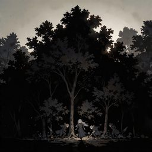
Cantrip · Illusion
The sound-maker as a spell: Wolf-tier flees. Bigger things come to look.
Spell lists. Bard, Druid, Warlock
Cantrip · Evocation
Light that an Umbral Tempest cannot devour, light-fearing creatures flinch from it.
Spell lists. Cleric, Druid, Sorcerer, Wizard, Artificer
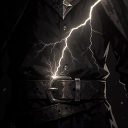
Cantrip · Evocation
1d8 lightning, disadvantage on the save if the target carries metal.
Spell lists. Druid, Sorcerer, Wizard, Artificer
1st level · Divination
Pattern a light and learn whether anything within 300 feet is watching you, how many, and from where.
Spell lists. Druid
1st level · Divination
Every door, gate, rift and Scar within a mile, open or not, passable or not. Never where they lead.
Spell lists. Warlock
1st level · Transmutation
Eight travellers get +10 speed, 12-hour marches without exhaustion, and no bad footing
Spell lists. Bard, Paladin, Ranger, Artificer
1st level · Divination
Learn whether an object is Old World, whether it is one of the 108 Wonders, and if unfound, its number.
Spell lists. Paladin
1st level · Divination
Read surface thoughts, press for answers at 1d6 psychic. Aberrations push back. Garbles nearby signals.
Spell lists. Bard, Sorcerer, Wizard
1st level · Abjuration
Reaction to halve lightning damage; the current stays in the target gear and shocks the next thing to touch it for 2d8.
Spell lists. Cleric
1st level · Illusion
You scan as any threat tier you choose. Claiming too high clears roads and kills.
Spell lists. Bard, Sorcerer, Warlock, Wizard
1st level · Enchantment
Name a real favour to stop a creature acting against you. The magic checks whether it happened.
Spell lists. Bard, Cleric, Paladin, Warlock
1st level · Abjuration
Immune to temporal displacement for an hour. Not immune to the fog itself.
Spell lists. Cleric, Wizard, Artificer
1st level · Divination
Touch the dirt: Dragon-tier passage, water and defensible ground, and whether the ground itself will kill you
Spell lists. Druid, Paladin, Ranger
1st level · Transmutation
A broken object works again for 10 minutes however badly damaged, or a vehicle regains 2d8 hit points.
Spell lists. Artificer
1st level · Necromancy
One word from a body dead under a minute. It cannot lie but it can be wrong.
Spell lists. Cleric, Warlock, Wizard
1st level · Enchantment
Implants a command that triggers up to 24 hours later, deals 1 psychic damage on casting that the target does not understand.
Spell lists. Bard, Warlock, Wizard
1st level · Enchantment
One creature perceives you and your cargo as worthless.
Spell lists. Bard, Sorcerer, Warlock
1st level · Divination
For an hour you know whether anyone you look at is Otherside-native, shapechanged or disguised, but never which.
Spell lists. Cleric
1st level · Abjuration
Mark one ally, reaction to halve its damage while within 30 ft. You know the instant it falls
Spell lists. Cleric, Paladin
1st level · Conjuration
The drifter oil flask as a spell. On ice, nobody stays standing.
Spell lists. Druid, Ranger, Sorcerer, Wizard, Artificer
1st level · Evocation
Your spell damage splashes 1d6 onto a random neighbour. It may be an ally and you do not choose.
Spell lists. Sorcerer
1st level · Divination
Read a barrier remaining strength, what it excludes, how long it has, and the fastest way to break it.
Spell lists. Paladin
1st level · Divination
The safest mile, drops navigation difficulty one grade for an hour.
Spell lists. Druid, Ranger, Wizard
1st level · Abjuration
One named creature cannot regain hit points or gain temporary ones for a minute. It knows who named it.
Spell lists. Paladin
1st level · Evocation
Red moonlight pins one creature: it cannot hide or turn invisible, and the next hit deals an extra 2d6 radiant.
Spell lists. Cleric
1st level · Transmutation
Nanites in a wound deal 1d6 a turn, or heal 1d6 a turn if the target is willing. It leaves a mark either way.
Spell lists. Sorcerer
1st level · Necromancy
A corpse goes quiet: it cannot be raised for 30 days, holds no trace, and any animation on it ends.
Spell lists. Druid
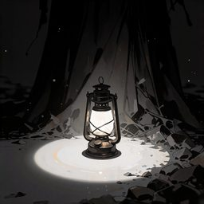
1st level · Evocation
A 10-ft radius the Necrotic Shroud cannot enter, 1d8 radiant to undead inside.
Spell lists. Cleric, Paladin, Wizard
1st level · Evocation
2d8 thunder in 10 ft and deafened — and everything within 300 ft knows where you are.
Spell lists. Bard, Sorcerer, Warlock, Wizard, Artificer
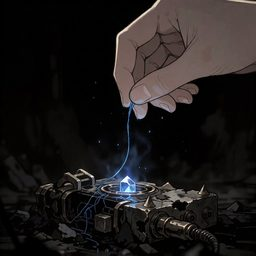
1st level · Transmutation
Drain a charge to make an object Elemental-Burst safe, or dump it for 2d8-4d8.
Spell lists. Sorcerer, Wizard, Artificer
1st level · Abjuration
Reaction to take an adjacent ally damage, halved. Works while grappled, silenced, or at 1 hit point.
Spell lists. Cleric
1st level · Evocation
2d6 lightning around you, and every nonmagical device within 30 feet stops working, including your own.
Spell lists. Sorcerer
1st level · Abjuration
2d8 healing that also ends one ongoing damage effect. Useless against necrotic decay.
Spell lists. Bard, Cleric, Druid, Paladin, Ranger, Artificer
1st level · Necromancy
Track one creature and deal an extra 1d6 necrotic; it fails outright on anyone who never hurt the defenceless.
Spell lists. Warlock
1st level · Enchantment
Speak plainly: undead and aberrations within 30 ft are turned. Does not work on anything you have attacked
Spell lists. Bard, Cleric, Paladin
1st level · Evocation
Pick a Lord: your damage becomes fire or necrotic, and your first kill pays out in temporary hit points or a secret.
Spell lists. Warlock
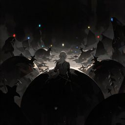
1st level · Divination
Sense the threat tier, direction and distance of everything within 300 ft for an hour
Spell lists. Druid, Ranger, Wizard
1st level · Enchantment
Name one monster tier and drive it off. Anything of a higher tier within 300 ft comes instead.
Spell lists. Druid, Ranger, Warlock
1st level · Evocation
A 15-foot cone of superheated ash for 2d8 fire and blindness. Ashenborn and Emberscale are untouched.
Spell lists. Druid
2nd level · Abjuration
Fix three allies' timelines: immune to Chrono Fog, aging and temporal displacement.
Spell lists. Cleric, Paladin, Wizard, Artificer
2nd level · Evocation
Ash and embers in a 20-ft cylinder: 2d6 fire and blinding. Leaves tracks for an hour.
Spell lists. Druid, Ranger, Sorcerer, Warlock
2nd level · Transmutation
Target's blood turns caustic, piercing or slashing damage sprays 1d6 acid within 5 ft.
Spell lists. Druid, Sorcerer, Wizard
2nd level · Abjuration
No tracks, scent, warmth or impression for eight hours. Pursuers lose the line and cannot recover it
Spell lists. Druid, Ranger
2nd level · Abjuration
A sphere of pale and red moonlight strips every disguise inside it and burns undead and Otherside natives for 1d8.
Spell lists. Cleric
2nd level · Illusion
2d6 psychic and Blinded, repeatable each round as a bonus action.
Spell lists. Bard, Sorcerer, Warlock
2nd level · Evocation
4d6 lightning in 20 ft, disadvantage in metal armour, and every nonmagical device in range dies for a minute.
Spell lists. Sorcerer, Wizard, Artificer
2nd level · Conjuration
Glass Rain shards erupt for 4d8 piercing and leave glass dust as difficult terrain.
Spell lists. Druid, Ranger, Sorcerer, Warlock
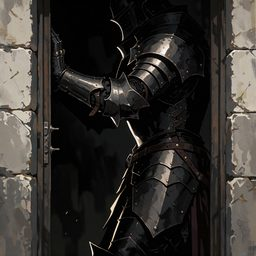
2nd level · Abjuration
Immovable, hostiles spend all movement to reach you, free opportunity attack each turn. Move and it ends
Spell lists. Cleric, Paladin, Ranger
2nd level · Abjuration
You cannot stop the spell, only make it land somewhere else, on a different target or 15 feet off.
Spell lists. Sorcerer
2nd level · Enchantment
A creature cannot harm you for as long as you extend the same courtesy, and gets a free swing when you break it.
Spell lists. Warlock
2nd level · Transmutation
A 20-ft aura where nonmagical devices stop working. Your own gear included, and you cannot switch it off.
Spell lists. Sorcerer, Warlock, Artificer
2nd level · Divination
Learn whether a creature has killed someone defenceless this year; if so it crits on 19 and cannot hide from you.
Spell lists. Paladin
2nd level · Necromancy
2d8 necrotic per turn, no concentration, attack disadvantage. Leaves no mark, which is why it is used indoors.
Spell lists. Cleric, Sorcerer, Warlock
2nd level · Abjuration
Repair a failing barrier by touch; on a city shield it holds out one extra named weather condition.
Spell lists. Paladin
2nd level · Divination
Know your quarry's direction at any range for 8 hours, +1d6 on your first hit each turn. It never finds out
Spell lists. Ranger
2nd level · Evocation
A 30-foot line of current for 3d8 lightning; metal armour gives disadvantage and pins the creature in place.
Spell lists. Cleric
2nd level · Transmutation
Change one property of a Medium object for an hour. Real, not illusory, and visibly done in a hurry.
Spell lists. Sorcerer
2nd level · Transmutation
A vehicle or construct doubles its speed and ignores terrain, then takes 2d6 damage when the spell ends.
Spell lists. Artificer
2nd level · Necromancy
Write a sentence in scar tissue that will not heal short of greater restoration and is legible to everyone.
Spell lists. Warlock
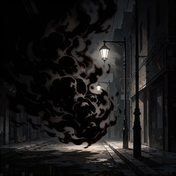
2nd level · Illusion
Heavy shadow that kills lights and devices, inside, you hear your own name from behind you.
Spell lists. Bard, Sorcerer, Warlock, Wizard
2nd level · Abjuration
+2 AC to one ally within 10 ft, and you can take half its damage. Beyond 10 ft it stops helping
Spell lists. Cleric, Paladin, Artificer
2nd level · Abjuration
You leave no wake, ripple, silt or scent in water or bog for an hour. Divers learn it before they learn to swim.
Spell lists. Druid
2nd level · Transmutation
Three creatures gain a climb speed, ignore scree and slag, cannot be knocked prone on a slope, and shrug off volcanic heat.
Spell lists. Druid
2nd level · Illusion
Fake the approach of a higher tier, everything below it flees. Everything at that tier comes to look
Spell lists. Bard, Druid, Ranger
2nd level · Transmutation
Purge weather residue and nanites from a 20-ft cube, 4d8 radiant to rift-born, 1d8 healing to others.
Spell lists. Cleric, Druid, Paladin, Ranger
2nd level · Abjuration
Reaction: return half the damage you just took as psychic to a creature within 60 ft.
Spell lists. Sorcerer, Warlock, Wizard
2nd level · Conjuration
Teleport 60 feet, or 120 feet with a passenger if you start and finish beside a doorway.
Spell lists. Warlock
2nd level · Divination
Read one creature threat tier, best and worst saves and one resistance; allies get advantage on their first attack.
Spell lists. Artificer
2nd level · Enchantment
Curse dealing 1d8 psychic whenever the target sees another creature succeed where it failed.
Spell lists. Bard, Cleric, Warlock
2nd level · Abjuration
You and nearby allies vanish from scent, tremor, life sense, blindsight, truesight and the Datasphere for 10 minutes.
Spell lists. Cleric
2nd level · Divination
A sealed thing tells you when it was last opened, by how many, and whether anything came out.
Spell lists. Paladin
2nd level · Evocation
No components at all: half the damage you just took, up to 4d6 force, hits everything within 10 feet.
Spell lists. Sorcerer
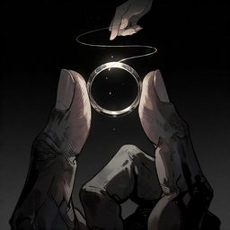
2nd level · Divination
Read an object's last holder and its most significant moment. Violent deaths bite back.
Spell lists. Bard, Sorcerer, Wizard
2nd level · Illusion
Draw a weapon out of your shadow that scales with your spellcasting ability and deals necrotic.
Spell lists. Bard, Sorcerer, Warlock
2nd level · Divination
Depth, bottom and every submerged creature or object within 120 feet, plus whether any of it is Old World work.
Spell lists. Druid
2nd level · Divination
Living wood reports everything that happened within 30 feet of it in the last day, as impressions rather than faces.
Spell lists. Druid
3rd level · Abjuration
Reaction: absorb 5d8 damage and redirect half of it as force. Weaker against Apocalypse tier and up.
Spell lists. Cleric, Paladin, Sorcerer, Wizard
3rd level · Transmutation
Make a Wolf- or Lion-tier creature friendly for 10 minutes. Afterwards it remembers the terms
Spell lists. Druid, Ranger
3rd level · Divination
Read the dimensional boundary within a mile: its condition, every Scar and Chrono Fog bank, and whether anything crossed.
Spell lists. Artificer
3rd level · Illusion
Injuries feel euphoric: forces concentration checks on any damage and denies reactions.
Spell lists. Bard, Sorcerer, Warlock
3rd level · Necromancy
Two creatures share half of each other damage; if one drops, the chain snaps for 6d6.
Spell lists. Sorcerer
3rd level · Abjuration
One barrier, ward or city shield gains 30 temporary hit points and doubles its radius, or runs again if it was broken.
Spell lists. Cleric
3rd level · Enchantment
A green light under the water charms a creature into walking down after it, 3d6 psychic and 5 feet per turn.
Spell lists. Druid
3rd level · Conjuration
Build a movable weather front: ash fall, sleet or static field, 20-foot radius, moved 20 feet as a bonus action.
Spell lists. Artificer
3rd level · Transmutation
Graft heartwood for 4d8 healing and a replaced limb, or close a 10-foot breach in a wall or hull.
Spell lists. Druid
3rd level · Necromancy
Ruin-energy starvation: unremovable exhaustion, necrotic vulnerability, compulsive eating.
Spell lists. Cleric, Warlock, Wizard
3rd level · Evocation
Bonus action, 5d8 radiant and no healing — but only against something that has already hurt an ally
Spell lists. Cleric, Paladin
3rd level · Conjuration
Summon a Jupito for an hour. Every casting on the same one makes it a size larger, up to Huge
Spell lists. Druid, Ranger
3rd level · Evocation
An unquenchable 20-foot light that no darkness or Umbral Tempest can touch, dealing 3d8 radiant to what hates it.
Spell lists. Cleric
3rd level · Transmutation
Gathers ambient energy over time to crystallise a mana crystal worth 1,000 gp.
Spell lists. Druid, Sorcerer, Wizard, Artificer
3rd level · Transmutation
Seed a weapon, armour or tool for a real upgrade. Afterwards the item is inert for a day.
Spell lists. Sorcerer, Wizard, Artificer
3rd level · Transmutation
4d6 piercing a turn, glass is immune — and on a 6 the nanites upgrade one creature, usually theirs.
Spell lists. Druid, Sorcerer, Wizard, Artificer
3rd level · Necromancy
Every wound in range opens for 4d8 necrotic. Creatures at full hit points are untouched.
Spell lists. Paladin
3rd level · Transmutation
Any seal you touch opens, Old World locks included, and cannot be closed again for a minute.
Spell lists. Paladin
3rd level · Transmutation
A movable 20-foot fissure dealing 4d6 fire that volcano natives read as a territorial boundary and will not cross.
Spell lists. Druid
3rd level · Conjuration
A rolling ash cloud that blinds and deals 4d6 fire, and flows downhill on its own if you do not move it.
Spell lists. Druid
3rd level · Conjuration
A paired hand-wide aperture up to a mile apart. Whatever is on the far side can reach back.
Spell lists. Warlock
3rd level · Transmutation
Lightning damage teleports you 60 feet with advantage on your next spell attack. You may also shock yourself on purpose.
Spell lists. Sorcerer
3rd level · Conjuration
Bonus-action 30-ft teleports, redirect a ranged attack, and leave hazardous tears behind. One may not close.
Spell lists. Sorcerer, Warlock, Wizard
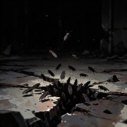
3rd level · Conjuration
Melidion-style infestation: 2d6 piercing, denies bonus actions and reactions, reveals hidden.
Spell lists. Sorcerer, Warlock, Wizard
3rd level · Illusion
Heavily obscuring mist where distance and direction stop agreeing. Allies you name see through it.
Spell lists. Bard, Ranger, Warlock, Wizard
3rd level · Abjuration
A 10-ft city-shield copy with 30 hp that monsters must save to enter. Weather ignores it.
Spell lists. Cleric, Paladin, Wizard, Artificer
3rd level · Transmutation
Grasping silt restrains; two failures in a row and the creature is submerged and suffocating.
Spell lists. Druid
3rd level · Evocation
6d6 force in a 20-foot radius that skips anyone who has not fought since the start of your last turn.
Spell lists. Warlock
3rd level · Abjuration
Circle that binds spellwraiths and Datasphere natives. Does nothing to anything else.
Spell lists. Sorcerer, Warlock, Wizard
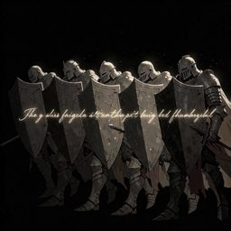
3rd level · Enchantment
Five allies get +1d4 to saves and no fear while obeying one sentence. The spell does not judge the order
Spell lists. Bard, Paladin
3rd level · Enchantment
Targets stagger half their speed in a random direction and lose reactions. Calamity tier and up hum along instead.
Spell lists. Cleric
3rd level · Divination
Floods a mind with unwanted truths: 3d6 psychic and Stunned on a failed Wis save.
Spell lists. Bard, Warlock, Wizard
3rd level · Enchantment
Reaction: a creature dropping to 0 hp takes one final action of your choosing first.
Spell lists. Bard, Warlock, Wizard
3rd level · Necromancy
Inflicts a wasting necrotic decay that recurs over time.
Spell lists. Cleric, Sorcerer, Warlock, Wizard
3rd level · Necromancy
5d6 necrotic and equal max-hp loss until a week inside a shielded city. Spoils supplies.
Spell lists. Cleric, Warlock, Wizard
3rd level · Conjuration
A gravity wound pulls creatures 10 ft inward per turn, 2d8 force at the centre.
Spell lists. Sorcerer, Warlock, Wizard
3rd level · Divination
Track anything you have read within 5 miles, its exact position, heading and speed, through any obstruction.
Spell lists. Artificer
3rd level · Evocation
A column of fire for 6d6; if it kills anything you get a Pact Magic slot back.
Spell lists. Warlock
3rd level · Conjuration
Wyldermoore heartwood briar: 3d6 piercing, reaction to restrain, goes dormant not dead.
Spell lists. Druid, Ranger, Warlock
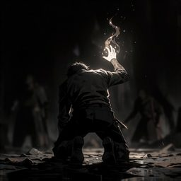
4th level · Necromancy
Reaction at 0 hp: cast one spell of 3rd level or lower plus an extra action before falling.
Spell lists. Sorcerer, Warlock, Wizard
4th level · Evocation
Roll 8d8 and split it between healing one creature and burning another. At least 1 point to each.
Spell lists. Bard, Cleric, Druid, Paladin
4th level · Enchantment
Two contradictory standing orders, alternating each round. Memento residents resist it.
Spell lists. Bard, Sorcerer, Warlock
4th level · Necromancy
Suspends 4d8 necrotic damage in a target, callable as a bonus action within 24 hours.
Spell lists. Cleric, Warlock, Wizard
4th level · Evocation
A body that just dropped goes up for 8d6 force and cannot be raised or spoken with. Allies included.
Spell lists. Sorcerer
4th level · Evocation
A 60-ft cone of horizontal water: 4d8 slashing, 15-ft push, no reactions. Shields and heavy armour resist.
Spell lists. Druid, Ranger, Sorcerer, Warlock
4th level · Abjuration
A hard-light perimeter costing hostiles extra movement and 3d8 force to cross, with cover for everyone inside.
Spell lists. Paladin
4th level · Transmutation
Crude Frozen Edge medicine: 6d8 healing and regrow one limb or sense, numb for a day.
Spell lists. Cleric, Druid, Paladin, Warlock
4th level · Transmutation
You become a conductor: 3d8 to melee attackers, and you can redirect lightning damage you take.
Spell lists. Cleric
4th level · Conjuration
A movable 10-ft whirlwind: 4d8 bludgeoning and restrained inside. Move it 30 ft as a bonus action.
Spell lists. Druid, Ranger, Sorcerer, Wizard
4th level · Transmutation
Fuse with a mechanism or vehicle, operate all of it at once, repair it. Fails near the Awakened.
Spell lists. Sorcerer, Wizard, Artificer
4th level · Transmutation
Cast 3rd level and below without slots by taking 5 necrotic per level, unhealable until a long rest.
Spell lists. Sorcerer
4th level · Abjuration
Counterspell that leaves a residue slot you can spend before your next long rest. No scaling.
Spell lists. Sorcerer, Warlock, Wizard
4th level · Divination
Name a Wonder between 1 and 108; if unfound and within 100 miles, you learn its direction and distance.
Spell lists. Paladin
4th level · Enchantment
Sing the disorientation song. Calamity-tier monsters are not affected — they join in and come.
Spell lists. Bard, Sorcerer, Warlock
4th level · Enchantment
A targeted dose of Psionic Storm: d6 erratic behaviour each turn. Psionic helms resist.
Spell lists. Bard, Sorcerer, Warlock
4th level · Transmutation
Four runes appear that you cannot choose or read: Strength, Speed or Endurance on a d6.
Spell lists. Bard, Cleric, Paladin, Ranger, Sorcerer
4th level · Divination
Every creature within 60 feet casts two shadows; you read true form, threat tier and whether they lied to you today.
Spell lists. Cleric
4th level · Divination
Every weather phenomenon arriving within 20 miles in the next day, with the exact hour and mile for one of them.
Spell lists. Artificer
4th level · Conjuration
Molten slag for 6d6 fire, then cools into permanent difficult terrain that holds anyone caught standing in it.
Spell lists. Druid
4th level · Enchantment
A charmed kiss that drains vitality, 4d8 scaling damage on a failed save.
Spell lists. Bard, Sorcerer, Warlock
4th level · Enchantment
Reopen your terms for one of three boons, and take disadvantage against the other two Lords creatures for 8 hours.
Spell lists. Warlock
4th level · Divination
Ask about anywhere on the plane; the answer arrives as an image, always from an underwater vantage.
Spell lists. Druid
4th level · Conjuration
Restore an object destroyed in the last hour, or permanently close a 10-foot rift.
Spell lists. Warlock
4th level · Necromancy
Everyone who died within 60 feet this month stands up as an impression and answers five questions between them.
Spell lists. Druid
4th level · Divination
Every weather phenomenon within 50 miles, and a Psionic Storm an hour before the Observatory sees it.
Spell lists. Sorcerer
4th level · Enchantment
A judgement left open: disadvantage against you and repeated fear. If it dies, nothing short of wish restores it.
Spell lists. Paladin
4th level · Evocation
6d8 lightning to everyone carrying metal in a 40-ft radius. Anyone unarmoured is untouched.
Spell lists. Druid, Sorcerer, Wizard, Artificer
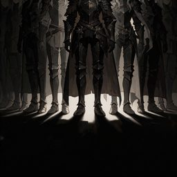
4th level · Abjuration
Allies within 20 ft cannot be moved, feared, charmed or downed in speed — and cannot Disengage or retreat
Spell lists. Cleric, Paladin
4th level · Necromancy
A creature takes an extra 2d8 necrotic from every source and heals you for half. Kill it for a slot, fail and lose one.
Spell lists. Warlock
4th level · Enchantment
One creature cannot act against a promise it has made. Fails outright on anyone who owes nothing
Spell lists. Bard, Cleric, Paladin
4th level · Abjuration
For a minute the first creature within 60 feet that would drop to 0 drops to 1 instead. You never learn who.
Spell lists. Cleric
5th level · Transmutation
Permanently reconfigure a nonmagical object up to Huge into another of similar mass. Old World work holds its shape.
Spell lists. Artificer
5th level · Conjuration
A weather condition animates and moves under your direction for 6d8 a turn, then stays where you left it.
Spell lists. Sorcerer
5th level · Conjuration
A 40-foot storm dealing 4d8 lightning that also shuts down all teleportation, rifts and planar travel inside it.
Spell lists. Artificer
5th level · Evocation
Frozen Edge cold in a 30-ft cube: 8d8 cold, speed to 0, Ice Blossom footing after.
Spell lists. Druid, Ranger, Sorcerer, Wizard
5th level · Evocation
Nova and Scarlet overhead: 4d8 radiant to Otherside natives, reveals true forms. Night only.
Spell lists. Bard, Druid, Paladin, Sorcerer
5th level · Necromancy
The wood empties itself: 4d8 psychic a turn, every skill the dead had, and undead turned. Then it is gone for good.
Spell lists. Druid
5th level · Conjuration
A 10-foot doorway to anywhere you have stood. You can do nothing else, everyone sees it, and it may not close.
Spell lists. Warlock
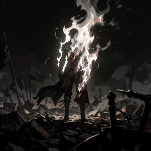
5th level · Abjuration
Reaction at 0 hp: a full minute at 1 hp, immune to everything. Then you fall with two death saves already failed
Spell lists. Cleric, Paladin
5th level · Conjuration
Teleport yourself and five allies up to a mile, keeping formation. Cannot cross a city shield.
Spell lists. Sorcerer, Warlock, Wizard
5th level · Necromancy
No healing of any kind within 30 feet, allies included, and 3d8 necrotic to hostiles each turn.
Spell lists. Paladin
5th level · Divination
Ask the Datasphere one question. You cannot tell which of three kinds of answer you received.
Spell lists. Bard, Wizard, Artificer
5th level · Transmutation
Accumulate Form points as you take damage: damage, regeneration and AC scale, then you pay for all of it.
Spell lists. Druid, Sorcerer, Warlock
5th level · Divination
A ritual map of every Scar, rift and thinning within 50 miles, which are growing, and which are being held open.
Spell lists. Artificer
5th level · Transmutation
Revive a creature dead under a minute at 1 hit point. Fails inside a Necrotic Shroud or the Scar.
Spell lists. Cleric
5th level · Transmutation
Permanently turn a 20-foot object, structure or terrain feature into another of similar mass.
Spell lists. Sorcerer
5th level · Conjuration
A pocket of Necrotic Shroud: 4d6 necrotic per turn, no healing inside, undead empowered.
Spell lists. Cleric, Druid, Warlock
5th level · Abjuration
The barrier does not fail; you become it, immobile, taking half its damage, and finish exhausted.
Spell lists. Paladin
5th level · Evocation
Extinguishes all light in a 60-ft sphere, 3d8 necrotic per turn to creatures inside.
Spell lists. Druid, Sorcerer, Warlock
5th level · Divination
One true answer as an image, not words. The shardlight is lost and something now has your face.
Spell lists. Cleric, Druid, Warlock, Wizard
5th level · Abjuration
Six allies go numb: psychic resistance, no fear/charm/exhaustion, but halved healing. No effect on Awakened.
Spell lists. Bard, Cleric, Druid, Paladin
5th level · Evocation
Extra 2d6 on every spell, 4d6 on every kill, 2d6 to yourself every turn, and you cannot hide.
Spell lists. Sorcerer
5th level · Evocation
10d6 force in 40 feet, sparing everyone who has not fought, and the ground stays scarred.
Spell lists. Warlock
5th level · Transmutation
Track one quarry at any range for 8 hours, crit on 19–20 against it. It knows the hunt has started
Spell lists. Ranger
5th level · Conjuration
A rift for 8d6 and grapples from the far side. Roll a d6 when it ends; on a 1 it stays open.
Spell lists. Warlock
5th level · Enchantment
Calamity-tier creatures and higher spend their turns singing, unable to act, though they may still move.
Spell lists. Cleric
5th level · Conjuration
The ground opens for 4d8 fire a round. Fire-immune creatures take nothing and are restrained instead.
Spell lists. Druid
5th level · Abjuration
One dormant Old World mechanism runs under your instruction, then seals itself permanently.
Spell lists. Paladin
5th level · Conjuration
Lit green water you did not summon: 6d8 psychic to one hostile a turn, 2d8 healing to allies, and no explanation.
Spell lists. Druid
6th level · Conjuration
Call an Ashenborn warrior for a minute: fire-immune, regenerating, thunder-vulnerable. Kaelithra keeps count.
Spell lists. Warlock, Wizard
6th level · Evocation
Bonus-action cantrips, +2 spell attack, 3d8 lightning aura — then the grid takes 4d6 back.
Spell lists. Sorcerer, Warlock, Wizard, Artificer
6th level · Abjuration
A sealed dome that survives Glass Rain or a Volcanic Storm for an hour.
Spell lists. Cleric, Druid, Wizard, Artificer
6th level · Divination
Seven days of regional weather, plus the exact hour and mile of one A/S event.
Spell lists. Cleric, Druid, Wizard
6th level · Evocation
A Skyquake called on purpose: 6d8 fire plus 4d8 thunder, deafens, leaves the ground glowing.
Spell lists. Cleric, Sorcerer, Wizard
6th level · Transmutation
Reassemble a pre-Scarring machine. It resumes its original task and cannot be stopped.
Spell lists. Wizard, Artificer
6th level · Evocation
A 30-ft Anti-Gravity Vortex, 4d8 piercing a round from flying metal.
Spell lists. Sorcerer, Wizard
6th level · Divination
Ritual to locate one of the 108 Wonders. Asking about an unfound one costs 4d6 psychic.
Spell lists. Bard, Cleric, Wizard
7th level · Transmutation
A zone of accelerated time. Every round inside costs a month of your life.
Spell lists. Sorcerer, Wizard
7th level · Conjuration
A 30-ft cube of reality instability, d6 effect per round. You are not immune to your own flutter.
Spell lists. Warlock, Wizard
7th level · Abjuration
Nothing hostile crosses 30 ft without 6d8 force and a stop. You may not move at all.
Spell lists. Cleric, Druid, Wizard, Artificer
7th level · Abjuration
Permanently close a Dimensional Scar up to 30 ft across. It watches you for the hour.
Spell lists. Cleric, Wizard, Artificer
7th level · Conjuration
Travel the Scar's mist to anywhere you have stood. You arrive permanently altered.
Spell lists. Druid, Warlock, Wizard
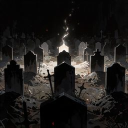
7th level · Necromancy
Every corpse within 300 ft tells you what it knew. The area becomes a Necrotic Shroud.
Spell lists. Cleric, Warlock, Wizard
7th level · Enchantment
Everything within 300 ft stops and listens. Everything within 3 miles hears it.
Spell lists. Bard, Druid, Warlock
7th level · Conjuration
A sky river lands in 40 ft: 6d10 bludgeoning per round, swept 20 ft, and failures by 5+ go into a frenzy.
Spell lists. Druid, Sorcerer, Wizard
8th level · Illusion
You read as S-tier. Most things flee. The Observatory logs it and so do the Lords.
Spell lists. Bard, Sorcerer, Warlock, Wizard
8th level · Conjuration
10d8 piercing, then the shards stand as a maze of cover for an hour. Diamonds in the residue.
Spell lists. Druid, Sorcerer, Wizard
8th level · Conjuration
Open a hand-wide rift for 6 rounds: draw, vent or reach through. On a 1 it does not close.
Spell lists. Warlock, Wizard
8th level · Enchantment
Target loses proficiency, reactions, and spells above 3rd — and permanently forgets one thing.
Spell lists. Bard, Sorcerer, Warlock, Wizard
8th level · Abjuration
Force The Calm over a mile for an hour. Savages come. Then the weather resumes at full.
Spell lists. Cleric, Druid, Wizard
8th level · Enchantment
Six native creatures obey one command, however suicidal. A Lord notices.
Spell lists. Bard, Sorcerer, Warlock
8th level · Transmutation
End one function of a pre-Scarring machine forever. The Datasphere records who did it.
Spell lists. Wizard, Artificer
9th level · Conjuration
A Cataclysmic-tier power answers for a minute. It is not your ally.
Spell lists. Druid, Warlock, Wizard
9th level · Divination
Three true answers from the pre-Scarring network. Everything in it sees you.
Spell lists. Warlock, Wizard, Artificer
9th level · Transmutation
Undo the last minute. Only you remember. You age a year and may not survive it.
Spell lists. Sorcerer, Wizard
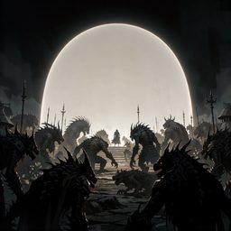
9th level · Abjuration
A 100-ft dome for 8 hours that a chosen monster tier and below simply cannot enter.
Spell lists. Cleric, Druid, Wizard
9th level · Evocation
20d10 force in a 1,000-ft sphere. The land becomes permanently scarred terrain.
Spell lists. Sorcerer, Wizard
The Drifters' Guild sorts everything that can kill you into six tiers — Wolf, Lion, Dragon, Calamity, Apocalypse, Cataclysmic — and prints the emblem on the contract. This chapter follows that scale rather than challenge rating alone, because that is what a caravan master actually asks. Every entry carries an image prompt for generating its portrait.
50 entries
Medium Aberration · CR 6 · Lion tier
Medium Aberration, CR 6 (Lion tier). Bog dweller that answers questions with one true word in your own voice
Region. The Bog
Image prompt. A pale eyeless humanoid-shaped aberration, skin translucent and slick like wet silt, with too many thin tendrils trailing from its back and jaw. Faint bioluminescent lights drift around it. Half-submerged in black bog water among sunken ruins, mist on the surface. Sickly green and grey palette, unsettling, dark-fantasy creature art, upper body emerging from water.
Huge Aberration · CR 15 · Calamity tier
Huge Aberration, CR 15 (Calamity tier). Cannot be scried, recorded or remembered, learns and resists anything you repeat
Region. Thundermount Greater Area · Fur Wehn
Image prompt. A vast humanoid absence — a shape defined by everything missing from it, edged in flickering violet error-text scrolling too fast to read. Where its face should be there is a rectangle of pure blank. Reality around it looks lower-resolution. Standing in a Datasphere gate chamber. Violet and void-black, dark-fantasy aberration art.
Medium Aberration · CR 13 · Calamity tier
Medium Aberration, CR 13 (Calamity tier). Ages you 1d10 years a touch, acts twice a round, rewinds attacks that hit it
Region. The Scar · Frozen Waste
Image prompt. A humanoid silhouette never quite where you are looking, several versions of itself at different ages — a child, an adult, something withered — layered over one another and moving at different speeds. Its edges smear when it turns. Drifting through grey Chrono Fog among stopped clocks. Desaturated grey and bone, motion-smear, dark-fantasy aberration art.
Medium Beast · CR 1/2 · Wolf tier
Medium Beast, CR 1/2 (Wolf tier). Pack hunter of the volcanic country, bite sets a target up to be knocked prone
Region. Celestial Volcano · The Scar
Image prompt. A lean wolf the size of a large hound, fur matted grey-white with volcanic ash, hot orange cracks glowing faintly along its ribs and muzzle. Yellow eyes. Standing on black scree with ash drifting past, thin smoke rising from its paws. Dark overcast sky, muted palette with ember accents, gritty dark-fantasy creature art, full body side profile.
Gargantuan Beast · CR 11 · Dragon tier
Gargantuan Beast, CR 11 (Dragon tier). Volcanic megafauna, siege monster with a 60-ft cinder bellow
Region. Celestial Volcano
Image prompt. A gargantuan quadrupedal beast like a cross between a bull and a tortoise, its back a landscape of cooled black lava crust split by rivers of glowing magma. Enormous forward-curving tusks of scorched bone. Ash pours off its flanks as it walks. Silhouetted against an erupting volcano at night. Epic scale with a tiny human figure for reference, dark-fantasy creature art.
Large Beast · CR 2 · Wolf tier
Large Beast, CR 2 (Wolf tier). Wool grown through with Glass Rain shards, charges and sheds cutting sprays
Region. The Scar · New Grandia Greater Area
Image prompt. A heavy-bodied wild ram, its thick fleece grown through with jagged translucent glass shards that catch the light like frost. Massive curled horns scarred and chipped. Standing on a plain littered with broken glass under a pale shimmering sky. Cold blue-grey palette with prismatic glints, dark-fantasy creature art, three-quarter view, full body.
Huge Beast · CR 5 · Lion tier
Huge Beast, CR 5 (Lion tier). Bonded companion whose master is gone, keeps growing with every kill
Region. New Grandia Greater Area · The Scar
Image prompt. A huge six-limbed beast with a broad blunt head and small mournful eyes, hide like plated leather in dusty ochre, oversized for its own proportions as though it grew too fast. A frayed leather collar far too small still buckled around its neck. Standing in an abandoned caravan camp at dusk. Melancholy tone, warm dust palette, dark-fantasy creature art, full body.
Medium Celestial · CR 8 · Lion tier
Medium Celestial, CR 8 (Lion tier). Devices work reliably near it — the exact inverse of an Awakened
Region. New Grandia Greater Area
Image prompt. A slender winged celestial figure made of clean white light and brass filigree, face smooth and featureless except for two calm points of light. Its wings are geometric rather than feathered, like a diagram. Hovering above a broken pre-Scarring machine that has begun to glow and function again. Warm gold and white against industrial dark, dark-fantasy celestial art, full body.
Medium Construct · CR 7 · Lion tier
Medium Construct, CR 7 (Lion tier). Performs a task nobody has identified, carries you out rather than kills you
Region. Thundermount Greater Area
Image prompt. A humanoid maintenance construct of riveted brass and dark iron, four articulated servo arms, no face — just a recessed sensor band glowing dull amber. Worn, scratched, centuries old but immaculately maintained. Standing in a vast dim factory hall full of moving machinery. Industrial pre-Scarring aesthetic, brass and rust palette, dark-fantasy construct art, full body.
Huge Construct · CR 10 · Dragon tier
Huge Construct, CR 10 (Dragon tier). Executes a fragment of a much larger instruction, interrupting it is what makes it hostile
Region. Thundermount Greater Area · New Grandia Greater Area
Image prompt. A sixteen-foot humanoid assembled from mismatched pieces of one of the 108 Wonders — curved panels of an unnameable metal still bearing fragments of inscription, held by a lattice of soft blue light. Moves like something following instructions rather than intent. Standing in a Reclaimer excavation pit. Blue-white glow on dark metal, dark-fantasy construct art.
Large Dragon · CR 8 · Dragon tier
Large Dragon, CR 8 (Dragon tier). Wingless slope drake, fire damage empowers it, breathes cooling slag
Region. Celestial Volcano
Image prompt. A wingless low-slung drake the length of a wagon, plated in overlapping matte grey-black scales with molten orange glowing in every seam. Dull coal eyes. Steam rising off its back. Crouched on volcanic rock, jaws parting to reveal a glow deep in its throat. Black and ember palette, dark-fantasy dragon art, full body three-quarter view.
Huge Dragon · CR 12 · Dragon tier
Huge Dragon, CR 12 (Dragon tier). Ranged attacks have disadvantage, breath leaves a field of standing glass
Region. The Scar
Image prompt. A long serpentine wyrm of fused translucent glass, organs faintly visible as coloured shadows deep inside. Every scale a flat pane, chipped and re-fused a thousand times. It refracts what is behind it so its outline is never quite right. Coiled in a field of standing glass shards. Prismatic, cold, dark-fantasy dragon art.
Gargantuan Dragon · CR 20 · Apocalypse tier
Gargantuan Dragon, CR 20 (Apocalypse tier). Only two-thirds present, breath sends you through to where it came from
Region. The Scar
Image prompt. A gargantuan wyrm that came through a Dimensional Scar and never finished arriving. Parts are missing and the gaps show through to a different sky. Where solid, black chitin and old scar tissue. Its shadow does not match its body. Emerging from a torn rift above a ruined plain. Wrongness, void-colours, dark-fantasy dragon art.
Huge Elemental · CR 18 · Apocalypse tier
Huge Elemental, CR 18 (Apocalypse tier). Cannot be outrun or teleported away from, unmakes objects and records
Region. The Scar
Image prompt. A tear in what is true, forty feet across, shaped differently every second — now a shoal of fish, now a staircase, now a face you know. Colours with no names leak from its edges. Objects nearby flicker between existing and not. Above a shattered landscape. Impossible geometry, dark-fantasy cosmic horror art.
Huge Elemental · CR 9 · Dragon tier
Huge Elemental, CR 9 (Dragon tier). The weather condition embodied, restrains creatures inside its column
Region. The Scar · New Grandia Greater Area
Image prompt. A narrow whirlwind two hundred feet tall, dust-grey shot through with flickers of old lightning, debris orbiting inside it — wagon boards, sheet tin, an entire uprooted tree turning near the top. No face, but the column leans as though watching. Crossing an open ash plain, tiny fleeing figures below for scale. Dark-fantasy elemental art.
Huge Elemental · CR 9 · Dragon tier
Huge Elemental, CR 9 (Dragon tier). Continuously collapsing column of magma, double damage from cold
Region. Celestial Volcano
Image prompt. A hunched figure of falling molten rock, a continuously collapsing column of magma that keeps re-forming into humanoid shape. The ground beneath it glows and sags. Liquid stone rains from its shoulders. Standing in the black of a volcanic storm at night. Orange-white core against total black, dark-fantasy elemental art.
Medium Elemental · CR 1 · Wolf tier
Medium Elemental, CR 1 (Wolf tier). Harmless until something in its space acts, marks you with a scent monsters track
Region. New Grandia Greater Area · Wyldermoore Greater Area
Image prompt. A drifting human-sized column of fine rain that never reaches the ground, faintly iridescent. Inside it, a suggestion of a face keeps almost forming. Moving the way weather moves, without hurry. On an open road under light drizzle. Soft grey-silver with rainbow sheen, quiet and eerie, dark-fantasy elemental art.
Medium Fey · CR 2 · Wolf tier
Medium Fey, CR 2 (Wolf tier). Wears the remembered face of a Wyldermoore dead, tree stride and briar restraint
Region. Wyldermoore Greater Area
Image prompt. A slender humanoid grown rather than born, bark-skinned in pale grey-green with grain running the wrong way. Its face is that of a dead person, remembered imperfectly by the wood — slightly off, slightly smoothed. Small white blossoms open along its collarbone. Standing among living-wood buildings in dappled forest light. Melancholy, pale green and bone palette, dark-fantasy fey art, full body.
Medium Fey · CR 7 · Dragon tier
Medium Fey, CR 7 (Dragon tier). Exists only at night under open sky, sings the Ode and calls Calamity tier
Region. Frozen Waste · Wyldermoore Greater Area
Image prompt. A tall attenuated figure of frost and refracted moonlight, limbs too long with too many joints, caught mid-dance. Frost blooms in rainbow patterns where it steps. A moonbow arcs overhead across a night sky with two moons. Frozen plain. Prismatic silver-blue on deep night, dark-fantasy fey art.
Huge Fey · CR 13 · Calamity tier
Huge Fey, CR 13 (Calamity tier). Answers any question truthfully, mid-combat, while still attacking
Region. The Bog
Image prompt. A towering shape assembled from bog water, drowned timber and thousands of responding lights, arranged into something almost humanoid and almost kind. Its face is a hollow of still water showing whoever you most recently lost. Rising from the shallows without disturbing them. Luminous green-black, awe and grief, dark-fantasy fey art.
Medium Fiend · CR 6 · Lion tier
Medium Fiend, CR 6 (Lion tier). Names a fair, payable price. Paying ends it permanently. Refusing starts it.
Region. Memento Greater Area
Image prompt. An impeccably dressed figure in a long violet coat, ledger under one arm, face hidden by a wide brim except for a courteous smile. Where its shadow should fall there is a second, taller shadow that does not match. At an alley mouth in Memento under a switching Dawn-to-Dusk lamp. Violet and gaslight-gold, dark-fantasy fiend art.
Small Fiend · CR 3 · Lion tier
Small Fiend, CR 3 (Lion tier). Ash body, reforms unless doused, sabotages Ashenborn negotiations for fun
Region. Celestial Volcano · The Scar
Image prompt. A small hunched fiend the size of a child, body of packed black ash held together by a lattice of dull red heat. Long clever fingers. Face a crude mask of cooled slag with two vents for eyes, venting thin smoke. Perched on black rock under a lightless sky. Charcoal and ember palette, malicious, dark-fantasy fiend art, full body.
Gargantuan Giant · CR 10 · Dragon tier
Gargantuan Giant, CR 10 (Dragon tier). Climbs any surface without a check, can bring the canyon wall down on you
Region. The Scar
Image prompt. A forty-foot giant whose shoulders and back are grown over with the same black rock as the walls of the Scar, so it vanishes into a cliff when still. Disproportionately huge splayed climbing hands. Face weathered almost featureless. Climbing a sheer canyon wall in perpetual mist. Monochrome black rock and grey fog, dark-fantasy giant art.
Large Giant · CR 5 · Lion tier
Large Giant, CR 5 (Lion tier). Giant-scale Ashenborn: knitting regeneration, thunder cracks the veins
Region. Celestial Volcano
Image prompt. A twelve-foot giant, skin charcoal-dark and split with cooling orange cracks. Bone-and-obsidian plate across one shoulder only. Carries a slab of basalt as a club. Long braided hair strung with cooled slag beads. Standing on a volcanic slope, ash falling. Black, orange and bone palette, dark-fantasy giant art, full body.
Medium Humanoid · CR 6 · Lion tier
Medium Humanoid, CR 6 (Lion tier). A damaged Datasphere link, hurts its own allies and cannot be read at all
Region. Fur Wehn · Memento Greater Area
Image prompt. An elf-like figure with pale skin traced by circuitry that flickers erratically — some lines dark, some blown out white, some scrolling backwards. One eye glows steadily, the other stutters. Its outline duplicates and snaps back at random. In a Fur Wehn hall with the walls glitching. Violet and static-white, dark-fantasy character art.
Medium Humanoid · CR 4 · Lion tier
Medium Humanoid, CR 4 (Lion tier). Scans your true tier, knows your debts, and would rather detain than kill
Region. New Grandia Greater Area · Memento Greater Area
Image prompt. A broad-shouldered enforcer in chain and a heavy Guild-marked coat, a scanner plate riveted to one forearm and a ledger chained at the belt. Professionally blank face, weighted baton. Standing in a New Grandia gate-house doorway, blocking it. Municipal grey and brass, dark-fantasy character art.
Medium Humanoid · CR 2 · Wolf tier
Medium Humanoid, CR 2 (Wolf tier). Will surrender, bargain or run — and knows where three things you want are
Region. Thundermount Greater Area · New Grandia Greater Area
Image prompt. A gnome in a scuffed canvas dig-harness hung with tools, goggles pushed up on a soot-streaked forehead, one glove missing, dull alloy prybar in hand. Kneeling beside an opened pre-Scarring housing in a lamplit excavation pit, completely absorbed. Warm lamplight on dark earth, dark-fantasy character art.
Medium Humanoid · CR 3 · Lion tier
Medium Humanoid, CR 3 (Lion tier). No long-range penalty, +3d6 patient shot, reads the weather
Region. The Scar · Frozen Waste
Image prompt. A wiry human in layered hides and wind-bleached wrappings, face covered except the eyes, long laminated horn bow across the back. Every item muted grey-brown and shaped not to catch light. Crouched motionless on a ridge of black scree, wind pulling at the wrappings. Bleak wide landscape, desaturated palette, dark-fantasy character art, full body.
Gargantuan Monstrosity · CR 26 · Cataclysmic tier
Gargantuan Monstrosity, CR 26 (Cataclysmic tier). A mountain that grew from a hatchling. Still wears the collar. Tarrasque-class.
Region. The Scar
Image prompt. A gargantuan six-limbed beast eighty feet at the shoulder, hide of layered ochre plate scarred by centuries of weather. Its head is still recognisably a hatchling's — blunt, round, with enormous mournful dark eyes. Worn almost to nothing around one pillar limb is a leather collar sized for something you could hold in one hand. Silhouetted over a ruined city at dawn, tiny figures below. Epic scale, awe and grief, dark-fantasy creature art.
Small Monstrosity · CR 1/2 · Wolf tier
Small Monstrosity, CR 1/2 (Wolf tier). Imprints on whoever feeds it first and cannot be made to attack them. It grows.
Region. New Grandia Greater Area
Image prompt. A palm-sized six-limbed creature with a blunt round head far too large for its body and enormous dark eyes. Soft dusty ochre hide. Obvious proportions of something that will not stay this size. Sitting in a drifter's cupped hands, looking up. Warm, endearing, dark-fantasy creature art, close-up.
Large Monstrosity · CR 1 · Wolf tier
Large Monstrosity, CR 1 (Wolf tier). The drifter joke, real. Upgrades itself permanently when bloodied
Region. Thundermount Greater Area · New Grandia Greater Area
Image prompt. A boiling swarm of two dozen hares half-rebuilt by nanites — patches of seamless chrome over fur, mismatched glass eyes, one with a lens where its face should be. Moving in perfect unison, eyes glowing faintly before they fire. Pouring over a low ridge at dusk. Absurd and menacing, chrome and dust, dark-fantasy swarm art.
Large Monstrosity · CR 7 · Dragon tier
Large Monstrosity, CR 7 (Dragon tier). DC 20 to spot before it strikes, drags you into deep water and holds you there
Region. The Bog
Image prompt. A long low ambush predator built like a heron crossed with a crocodile, on four impossibly thin stilt-legs so it reads as a stand of reeds until it moves. Mottled brown-green hide, neck that extends ten feet in one strike. Motionless in shallow bogwater among real reeds, almost invisible. Muted swamp palette, dark-fantasy creature art.
Small Monstrosity · CR 1/2 · Wolf tier
Small Monstrosity, CR 1/2 (Wolf tier). Invisible near light, blinds with prismatic wings, always flies toward the lamp
Region. Wyldermoore Greater Area · Memento Greater Area
Image prompt. A moth the size of a dinner plate with wings of thin translucent crystal refracting light into moving colours. Soot-black furred body. Trails faintly glowing dust. Fluttering around a hanging crystal lantern in total darkness. Black background with prismatic rainbow scatter, dark-fantasy creature art, wings spread.
Large Monstrosity · CR 4 · Lion tier
Large Monstrosity, CR 4 (Lion tier). Completely deaf, hunts purely by movement. Stand still and it loses you
Region. The Scar · Frozen Waste
Image prompt. A large hound-shaped predator with no external ears at all — smooth scarred hide where they should be — and enormous forward-set eyes. Oversized jaw, uncannily silent gait. Standing alert on cracked ground while the sky detonates behind it. Grey-brown on white flash, dark-fantasy creature art.
Large Ooze · CR 6 · Lion tier
Large Ooze, CR 6 (Lion tier). Absorbs everyone who dies in it, speaks their sentences and takes yours
Region. The Bog
Image prompt. A slick grey mass of bog silt the size of a cart, surface stippled with impressions that surface and sink — a hand, a mouth mid-word, a face pressing up from underneath and going under again. Bioluminescent motes drift above it. Oozing through submerged ruins in shallow black water. Grey-green, quietly horrible, dark-fantasy ooze art.
Large Ooze · CR 3 · Lion tier
Large Ooze, CR 3 (Lion tier). Corrodes metal permanently, cannot cross glass, occasionally upgrades what it eats
Region. Thundermount Greater Area
Image prompt. A slow mass of liquid metal the colour of tarnished mercury, surface crawling with microscopic machinery in shifting grid patterns. Half-digested tools and weapons visible inside, some of them improved. Oozing across a workshop floor between glass containers it refuses to touch. Cold silver and grey, dark-fantasy ooze art.
Large Plant · CR 5 · Lion tier
Large Plant, CR 5 (Lion tier). Lovely scent pulls you in, petals of volcanic glass fire in a 30-ft cone
Region. Celestial Volcano
Image prompt. A wide flowering plant ten feet across on a volcanic slope, petals of thin cooled volcanic glass in orange and black, centre a glowing vent. Roots visible where they cracked the rock, still faintly hot. Beautiful at distance, wrong up close. Black slope, falling ash. Orange-on-black, dark-fantasy plant art.
Large Plant · CR 2 · Wolf tier
Large Plant, CR 2 (Wolf tier). Rolling thorn mass, dormant not dead, regrows unless the ground is burned
Region. Wyldermoore Greater Area
Image prompt. A dense rolling mass of black thorn-briar the size of a cart, moving on a shifting mat of root-legs. Pale flowers open across it at random. Caught in the thorns: a boot, a lantern, a wedding band. Rolling through dim forest undergrowth. Black-green and bone-white palette, quietly horrible, dark-fantasy plant art.
Medium Undead · CR 15 · Calamity tier
Medium Undead, CR 15 (Calamity tier). Top of the ladder — AC 17, 275 hp
Region. Fur Wehn · The Scar
Image prompt. A wraith so saturated with power its human outline is barely a suggestion inside a pillar of blinding violet-white script. Reality bends visibly around it. Only the hands remain clearly defined, and they are reaching. Dark-fantasy undead art, full body, awe-scale.
Medium Undead · CR 8 · Dragon tier
Medium Undead, CR 8 (Dragon tier). Undecayed and fully aware, only fire or radiant ends it. Still counting.
Region. Frozen Waste
Image prompt. A figure in the remains of a Lifeweaver stasis capsule — curved frosted panels fused to shoulders and hips, coolant lines trailing and dripping. Skin grey-blue and perfectly preserved, eyes clear and aware. Not decayed at all, which is worse. Standing in snow beside a cracked-open capsule bank. Ice-blue and white, clinical horror, dark-fantasy undead art.
Huge Undead · CR 9 · Dragon tier
Huge Undead, CR 9 (Dragon tier). Cannot be destroyed while the tasks remain undone. Resolve one, lose one voice.
Region. Wyldermoore Greater Area · The Scar
Image prompt. A slow-turning column of forty translucent figures wound around one another like smoke, all mid-sentence, none finishing. Faces surface and submerge. One reaches out. Advancing at walking pace through greenish necrotic fog over a mass grave. Grey-green, mournful, dark-fantasy undead art.
Medium Undead · CR 4 · Lion tier
Medium Undead, CR 4 (Lion tier). Its lantern is real, dry and lit, and it always seems to be over solid ground
Region. The Bog
Image prompt. A bloated drowned figure in a silt-caked drifter's coat, walking upright along the bottom in shallow water so only the lantern breaks the surface. The lantern is dry, lit and perfectly maintained. Its face is turned away and stays turned away. Black bogwater at night, the light bobbing ahead. Green-black with one warm point of light, dark-fantasy undead art.
Medium Undead · CR 9 · Dragon tier
Medium Undead, CR 9 (Dragon tier). Fifth rung — AC 16, 150 hp
Region. Fur Wehn · The Scar
Image prompt. A wraith whose form has begun to exceed its silhouette, extra arms of pure sigil-light unfolding from its back, the air around it warped and lensed. Violet shading into hostile white. Dark-fantasy undead art, full body.
Medium Undead · CR 2 · Wolf tier
Medium Undead, CR 2 (Wolf tier). Weakest rung of the Spellwraith ladder — AC 12, 36 hp
Region. Fur Wehn · Thundermount Greater Area
Image prompt. A translucent humanoid figure barely holding shape, edges dissolving into drifting motes of pale violet code-light. Where the face should be there is a smear of half-formed sigils. Hovering in a dim ruined corridor. Cold violet and grey palette, dark-fantasy undead art, full body.
Medium Undead · CR 3 · Lion tier
Medium Undead, CR 3 (Lion tier). Second rung — AC 13, 49 hp
Region. Fur Wehn · Thundermount Greater Area
Image prompt. A humanoid wraith that appears in stutters, its outline duplicated a half-second behind itself in trailing after-images of violet light. Sigils crawl across its chest. Cold violet and grey palette, motion-blur duplication effect, dark-fantasy undead art, full body.
Medium Undead · CR 1 · Wolf tier
Medium Undead, CR 1 (Wolf tier). Repeats one ordinary action forever, hostile only if you interrupt the loop
Region. Wyldermoore Greater Area
Image prompt. A translucent grey figure caught mid-gesture — setting down a cup, checking a strap — features clear but edges dissolving. Repeated ghost-images of the same motion trail behind it. Standing in a living-wood doorway at dusk. Muted grey-blue, deeply sad rather than frightening, dark-fantasy undead art, full body.
Medium Undead · CR 3 · Lion tier
Medium Undead, CR 3 (Lion tier). Carries its own 10-ft necrotic fog, shardlights shut it down
Region. Wyldermoore Greater Area · The Scar
Image prompt. A corpse walking upright inside a personal cloud of greenish necrotic fog that moves with it, so it is never fully visible — a shoulder, a jaw, a hand, then fog again. Drifter's clothes, still recognisable. Whatever killed it is still visible on it. Walking across dead ground under a green-tinged sky. Sickly green, dark-fantasy undead art.
Medium Undead · CR 12 · Dragon tier
Medium Undead, CR 12 (Dragon tier). Sixth rung — AC 17, 210 hp
Region. Fur Wehn
Image prompt. A crowned wraith of dense violet-white light, robes of scrolling script trailing into nothing, a ring of suspended sigils rotating slowly above its head like a diadem. Commanding posture. Dark-fantasy undead art, full body.
Medium Undead · CR 7 · Dragon tier
Medium Undead, CR 7 (Dragon tier). The baseline form — AC 15, 120 hp
Region. Fur Wehn · Thundermount Greater Area
Image prompt. A fully realised wraith of condensed violet light in the shape of a robed spellcaster, sigils orbiting its hands, face a mask of solid glyphs. Floating a foot above the ground. Cold violet and white core-glow, dark-fantasy undead art, full body.
Medium Undead · CR 5 · Lion tier
Medium Undead, CR 5 (Lion tier). Third rung — AC 14, 85 hp
Region. Fur Wehn · Memento Greater Area
Image prompt. A tall wraith wrapped in a veil of woven light that hides everything but two burning sigil-eyes. The veil is made of scrolling characters rather than cloth. Cold violet and deep blue palette, dark-fantasy undead art, full body.
A hundred and sixty-eight objects, from a tin of rations that refills at dawn to relics that were prised out of things which had names. Rarity here tracks what it costs to obtain, not how loudly it glows. The cheapest items in this chapter are the ones a first-year Drifter actually owns, and they are the ones that keep them alive.
168 entries
Common
Read Ashentongue haltingly, advantage on one parley a day, but only if they see you consult it
Rooted in. Ashenborn forms of address
Common
Frozen Edge medicine. 2d4+2 healing, ends one condition, and stops any ongoing damage effect
Rooted in. Frozen Edge medicine
Common
Drink for 2d4+2 and poison advantage, or throw for 2d6 necrotic that blocks healing.
Common
Drifter field rations. Refills daily, immune to weather contamination, and grants disease/exhaustion advantage
Rooted in. Drifter field rations
Common
One blast a day shuts off a regenerating creature's healing for a round. Useless on everything else
Rooted in. Fur Wehn border issue
Common
Makes any liquid safe and warm — and clouds grey if it is poisoned rather than merely filthy
Rooted in. Volcanic glass, blown thin
Common
Wyldermoore wardens. Drive it in: no low-tier undead, no impressions, and nobody who dies inside rises
Rooted in. Wyldermoore wardens
Common
Wehnfolk and Echoed treat you as a guest — and it unravels publicly if you break the obligation
Rooted in. Wehnfolk hospitality as contract
Common
3d6 cold in 10 ft, doubled against fire creatures, and a 1-minute cooling zone.
Common
Petrichor Rain kit. Blocks the smell monsters track you by, shelters cargo from rain-borne contamination
Rooted in. Petrichor Rain kit
Common
Know any city shield's state within 5 miles, pass a gate uninspected once a day. Every chit is numbered
Rooted in. Shieldwright family issue
Common
Skyquakes. Thunder and deafness immunity, selective hearing, and Stealth advantage against deaf monsters
Rooted in. Skyquakes
Common
Ashenborn currency. An ember that never goes out. One coal is a day of hospitality — placed on the ground, not handed over
Rooted in. Ashenborn currency
Common
Sleeping rough. Records everything that came near while you slept. It does not wake you, deliberately
Rooted in. Sleeping rough
Common
Bog and Shroud runners. 10 minutes without breathing, immune to inhaled poison and particulates. You cannot speak
Rooted in. Bog and Shroud runners
Uncommon
Environmental fire resistance and advantage vs fear — and every Ashenborn knows whose plate it was
Rooted in. Cut from a war band body
Uncommon
Signal Bog natives to indifference, and ask the light three yes-or-no questions a day.
Uncommon
Ceramic war pick: +1 rising to +2 beside an ally, immune to storm and vortex hazards.
Uncommon
Tells you which council holds a district and which ordinances are in force, admits you once a day
Rooted in. Memento's two councils
Uncommon
Spend it and the issuer knows what you need and where. No compulsion. They come anyway.
Uncommon
Replays the last hour of sound, seal one minute permanently. Admissible as evidence in three cities.
Uncommon
Ignore ice, oil and glass terrain, never fall, leave no tracks, and lock yourself immovable.
Uncommon
Perception advantage, never surprised by low tiers, reroll an attack on an ally, Glass Rain sealed.
Uncommon
The Iron Caravan. Ten-word messages at any distance, plus position and condition roll call for a set of six
Rooted in. The Iron Caravan
Uncommon
The Lavender Explorers. Self-drawing chart with company margin notes, name what you map and it sticks
Rooted in. The Lavender Explorers
Uncommon
The drifter favour economy. Records every favour automatically and tells you whether they agree with your figure
Rooted in. The drifter favour economy
Uncommon
Outer Lands anti-raid gear. Seals any 10-ft opening as iron. Nothing teleports through and you feel it touched
Rooted in. Outer Lands anti-raid gear
Uncommon · cursed
Reroll any d20 twice per long rest. CURSE: It always returns to your pack. A Melidion raid finds you weekly, and each reroll brings them a day sooner.
Boon. Reroll any d20 twice per long rest.
Curse. It always returns to your pack. A Melidion raid finds you weekly, and each reroll brings them a day sooner.
Uncommon
Ambush-proof, Melidion must save to attack you first. Marks you for the rest of the raid.
Uncommon
Poison resistance, discharge once per dawn for temp hp and +1d4 necrotic melee.
Uncommon
The Moongazer family, Wyldermoore. Points at safe camp, the way out, or whoever is following you. Must touch soil daily or it dies
Rooted in. The Moongazer family, Wyldermoore
Uncommon
3 charges: disassemble a nonmagical 5-ft cube, or seed a weapon for +1d6 necrotic.
Uncommon
Drink for temp hp and Strength 18, or pour to upgrade an item for an hour before it disassembles.
Uncommon
Thundermount prospectors. Find ore through stone, detect active magic, and restart dormant Old World machinery
Rooted in. Thundermount prospectors
Uncommon
Each stone repeats what was said near the other an hour ago. No way to send deliberately
Rooted in. Wehnfolk make them in pairs
Uncommon
90-ft darkvision, sense groups through stone, and exchange wordless impressions with any creature.
Uncommon
Psychic resistance, Psionic Storm immunity, and a reaction to cut 2d8 psychic off an ally.
Uncommon
Read the cipher, detect active cells, identify Reclaimers and Guardians on sight, and read as nonmagical.
Uncommon
Advantage opening pre-Scarring housings without triggering them, +1 vs constructs
Rooted in. Salvage crew standard
Uncommon
The Calm's only required gear. Always-correct 5-mile map, never lost, holds five permanent marks
Rooted in. The Calm's only required gear
Uncommon
30-ft light that no Umbral Tempest, Shadowstorm or magical darkness can absorb. Wards monsters.
Uncommon
Shieldwright guild issue. See any barrier as a surface, read its strength, and find the emitter sustaining it
Rooted in. Shieldwright guild issue
Uncommon
City signal codes. Sound curfew, shift change, alarm, or all clear. A false all-clear is capital in Memento
Rooted in. City signal codes
Uncommon
Breathe and see through silt for 10 minutes a day — and the lights come and follow you
Rooted in. Bog work
Uncommon
2d6 thunder in a cone twice a day, and it strips regeneration for a round
Rooted in. A Skyquake, aimed downhill
Uncommon
Petrichor Rain kit. Scatter CR 2 or lower, or fake a Dragon-tier approach. Sometimes something bigger hears
Rooted in. Petrichor Rain kit
Uncommon
3 charges: permanently cleanse soil or water, or flare for 3d8 radiant to rift-born.
Uncommon
Signal the nearest Guardian Sparrow within 100 miles. They arrive, then ask questions.
Uncommon
Skyquake immunity, cargo protection, minus 10 falling damage, and a damage-halving reaction.
Uncommon
Read time dilation, rifts and Time Wraiths at 120 ft, plot a safe crossing once per short rest.
Uncommon
The Doctor, who refused the Guardians. Stabilise at range, triage a whole room, and treat anyone regardless of who outlawed them
Rooted in. The Doctor, who refused the Guardians
Uncommon
Draws every Thunder Booms discharge within 60 ft to itself. Ten strikes, then slag
Rooted in. The old metal-spike trick, refined
Uncommon
The lowest monster tier. Tracking advantage, Wolf-tier monsters ignore you. Experienced drifters read it accurately
Rooted in. The lowest monster tier
Uncommon
7 charges: 2d6 lash that slows, or a 20-ft briar thicket dealing 3d6.
Rare
Aegis Awakened archetype. Shield: absorb 3d8 for an ally and redirect half as force. Fails near an actual Awakened
Rooted in. Aegis Awakened archetype
Rare
+1 scimitar, +1d6 fire, fire resistance, see through ash, kindle for double burn and retaliation.
Rare · cursed
Bonus-action Hide in dim light, move through creatures while hidden, shadow-to-shadow slip. CURSE: Your shadow stops matching you and takes one action of its own per day. Removing the shroud does not give it back.
Boon. Bonus-action Hide in dim light, move through creatures while hidden, shadow-to-shadow slip.
Curse. Your shadow stops matching you and takes one action of its own per day. Removing the shroud does not give it back.
Rare
Blighter Awakened archetype. A 20-ft decay field: 3d6 necrotic and every device degrades. Your own gear included
Rooted in. Blighter Awakened archetype
Rare · cursed
Opens any Old World door, hatch or sealed mechanism regardless of lock or power. CURSE: Every door is logged. After three, people know your name and route. After ten, you are summoned.
Boon. Opens any Old World door, hatch or sealed mechanism regardless of lock or power.
Curse. Every door is logged. After three, people know your name and route. After ten, you are summoned.
Rare
Recover a spell slot of 3rd or lower once a day for 2d6 unpreventable force. Every draw is logged
Rooted in. A spigot on the Ruin's grid
Rare
The Storm Chasers. Triple speed or quadruple vehicle pace, outrun any tier A phenomenon if you do not stop
Rooted in. The Storm Chasers
Rare
Rings within a mile of an uncatalogued Wonder. Everything else within a mile hears it too
Rooted in. Wonder-finding
Rare
2d6 cold and a full minute of no regeneration. Refills only if it slept somewhere cold
Rooted in. Frozen Edge coolant, thrown
Rare
+1 longsword, +1d6 cold, 2d10 against fire immunity, quench to make a cooling zone.
Rare
Thundermount focus: store a 3rd-level spell indefinitely, hums near magic, or shatter for 6d6 force.
Rare
Living Cyclones. A bottled whirlwind you can move 30 ft a turn and recapture
Rooted in. Living Cyclones
Rare
+1 spell attack and DC, reaction to draw off an enemy spell for temp hp and 1d6 psychic.
Rare
Persuasion advantage for rulings, and issue one order a creature treats as legitimate authority.
Rare
Locate recent corpses by name, raise one 8-hour servant twice per dawn.
Rare
The Deep Delvers. Hangs toward whatever is still powered, sound the depth for a 200-ft structural map
Rooted in. The Deep Delvers
Rare
6 real Glass Rain diamonds: nanite-proof an object, or sheathe yourself against blades.
Rare
Memento's two councils. A blank genuine writ. Any Dawn official can contest it, and then neither of you can act
Rooted in. Memento's two councils
Rare
Council of Elders. Forge genuine Council instruments, issue one courier's demand per dawn. Treason if checked
Rooted in. Council of Elders
Rare
Fabricator Awakened archetype. Manifest a permanent object from scrap, or reduce an object back to scrap
Rooted in. Fabricator Awakened archetype
Rare
+1 longsword that reconfigures itself every long rest on a d6 of specifications.
Rare
Guardian rank ring: Oathlight aura for allies, and a Sparrow muster signal.
Rare · cursed
Lightning resistance and a free lightning bolt each long rest. CURSE: Every lightning effect within 60 ft retargets you, including your allies' and your own. Storms strike you regardless of shelter.
Boon. Lightning resistance and a free lightning bolt each long rest.
Curse. Every lightning effect within 60 ft retargets you, including your allies' and your own. Storms strike you regardless of shelter.
Rare
Wyldermoore horticulture. +1 dagger that grafts living wood to anything — walls, hulls, broken limbs, or a target's legs
Rooted in. Wyldermoore horticulture
Rare
Immovable, double carry, immune to Anti-Gravity Vortex, pin a creature once per dawn.
Rare
Guardian officers with a jurisdiction. Rally allies for temp hp and movement, a short note stabilises a falling ally. Every sounding is logged
Rooted in. Guardian officers with a jurisdiction
Rare
Ironwall Awakened archetype. Set your weight: immovable and resistant, but speed 0 and no good Dex saves
Rooted in. Ironwall Awakened archetype
Rare
Ashenborn will not strike first, once a day command an Otherside native. She always knows where it is
Rooted in. Given by a Lord, never found
Rare
Lancer Awakened archetype. 300-ft 4d8 force shot with no projectile or source. Useless within 10 feet
Rooted in. Lancer Awakened archetype
Rare
The tier where drifters start dying. +1 AC, read any monster's tier on sight, and one guaranteed crit per rest on Lion or lower
Rooted in. The tier where drifters start dying
Rare
Flight, no fall damage, full immunity to gravity effects, and a tether for one ally.
Rare
Mindseer Awakened archetype. Read surface thoughts as a bonus action, implant a false memory that holds until contradicted
Rooted in. Mindseer Awakened archetype
Rare
+1 to a weapon, armour or tool for an hour — and on a 1 they upgrade something else nearby
Rooted in. Storm nanites in a glass tube
Rare
Awakened Nexuses. The Nexus Collar's opposite: telepathy and rerolls for five, and anyone can cut loose freely
Rooted in. Awakened Nexuses
Rare
Paired moon prisms: switch between anti-charm light and necrotic resistance with radiant damage.
Rare
Forecast which of the 21 phenomena arrives in 12 hours, 4 charges for a gale or a lightning squall.
Rare
Disorient everything in 30 ft, or make a Calamity-tier monster stop and sing. It then knows where you are.
Rare
The Otherside itself. Make a 15-ft area into Otherside terrain. Ashenborn benefit, and they will notice you did it
Rooted in. The Otherside itself
Rare
Advantage vs fear, and three times it drops you to 1 hp instead of 0. Then it is dust forever
Rooted in. Broken at the leaving ceremony
Rare
Mark a quarry for tracking and advantage, or grant the party speed. The quarry always knows.
Rare
Waterfall Shower. Anchor six creatures against forced movement, split moving water once per rest
Rooted in. Waterfall Shower
Rare
Strength advantage, 60-ft darkvision, +1d8 elemental inside powered ruins, but you burn in sunlight.
Rare
Poison advantage and at-will disguise self, warp a creature for 1d10 poison per turn.
Rare
Three applications of runes you cannot choose: Strength 19, +20 speed, or Constitution 19 with resistance.
Rare
Never lost, immune to directional confusion, and locate any rift within a mile once per short rest.
Rare
Leafwilt 4, the Great Scarring. Force a minute of silence nobody can fight through, heal, or burn undead for 6d8 radiant
Rooted in. Leafwilt 4, the Great Scarring
Rare
Ashenborn shamans. Petition the Otherside on a d6. On a 6 a Lord answers and your fire spells max out
Rooted in. Ashenborn shamans
Rare
+1, extra 1d8 thunder, and it shuts off regeneration on hit
Rooted in. Forged the season the war started
Rare
A 20-ft dome for 10 minutes that excludes one named weather condition entirely
Rooted in. A city shield, scaled down
Rare
Disease immunity and necrotic resistance, vent a 20-ft shroud cloud or cure a disease.
Rare
Skinchanger Awakened archetype. Shift into a CR 2 beast twice per rest. On a 1 the pelt picks the form, and it is wrong
Rooted in. Skinchanger Awakened archetype
Rare
+10 speed, initiative advantage, an extra action on round one, and a reaction extraction for a downed ally.
Rare
Lightning and thunder resistance, charges from storms, discharge for 2d8 per charge, or storm-step 30 ft.
Rare
+1 AC scale mail, lightning save advantage, shed grapples, full Hit Dice, no lightning draw.
Rare
Strikecaster Awakened archetype. +2d8 force and a knockdown on a charged strike, overdraw once per long rest at a cost
Rooted in. Strikecaster Awakened archetype
Rare · cursed
Change face, build, voice and age at will, real to every sense and to detect magic. CURSE: Each change makes one person who knows you forget your face. When they run out, it starts on your own memory.
Boon. Change face, build, voice and age at will, real to every sense and to detect magic.
Curse. Each change makes one person who knows you forget your face. When they run out, it starts on your own memory.
Rare
+1 half plate, fire resistance, sealed against ash and Glass Rain, and a heat-sink release.
Rare
Live a minute of an object's past. On Datasphere objects it shows a minute that has not happened.
Rare
Fix your timeline: immune to aging and displacement, cross Chrono Fog at pace, extend to five allies.
Rare · cursed
One extra turn per long rest, half aging, Dexterity save advantage. CURSE: Every extra turn ages everyone within 30 ft by a year, allies included. You cannot unattune while they live nearby.
Boon. One extra turn per long rest, half aging, Dexterity save advantage.
Curse. Every extra turn ages everyone within 30 ft by a year, allies included. You cannot unattune while they live nearby.
Rare
Veilblade Awakened archetype. Necrotic shortsword with no reflection, pull a second one out of your shadow
Rooted in. Veilblade Awakened archetype
Rare
Outer Lands route cairns. A portable safe campsite that blocks tier B weather, and a note that stays with the place
Rooted in. Outer Lands route cairns
Rare
Learn what one creature most wants right now — and it feels itself read
Rooted in. Threadweaver optics
Rare
+2 Persuasion and Deception, universal understanding, one charm per dawn.
Rare · cursed
Question the named dead daily, death save advantage, and rerolls on failed checks. CURSE: Cannot be removed. Each long rest risks 1d4 maximum hp until you rest in a shielded city. At half maximum it speaks as you.
Boon. Question the named dead daily, death save advantage, and rerolls on failed checks.
Curse. Cannot be removed. Each long rest risks 1d4 maximum hp until you rest in a shielded city. At half maximum it speaks as you.
Very Rare
+2 dagger, hide while observed, 30-ft ashen step, auto-crit on anything that has not acted.
Very Rare
The tier that sings in Moonbows. +2 AC studded leather, Calamity-tier must save or spend a turn singing instead of attacking
Rooted in. The tier that sings in Moonbows
Very Rare
Caller Awakened archetype. Ring for a summon on a d6. On a 6 what answers is hostile to everything including you
Rooted in. Caller Awakened archetype
Very Rare
Fire immunity and a one-minute ignition. The first Ashenborn to see it decides holy or blasphemous
Rooted in. Came out of a Volcanic Storm intact
Very Rare
Wehnfolk Citadel, Wonder #89. Eleven notes that open Wehnfolk doors and stop Wehnfolk mid-step. The Wehnfolk know who has it
Rooted in. Wehnfolk Citadel, Wonder #89
Very Rare
Conduit Awakened archetype. 60 Vitality split between healing and burning. Every point spent one way is gone from the other
Rooted in. Conduit Awakened archetype
Very Rare
Invisible to everything native to the Datasphere — and whatever was tracking you camps on your last position
Rooted in. Echoed counter-surveillance
Very Rare
Project into the Datasphere for 10 minutes with no disorientation, an ally can pull you back.
Very Rare
The tier that threatens settlements. Two chosen resistances, lower tiers avoid you, and a 30-temp-hp escalation once per rest
Rooted in. The tier that threatens settlements
Very Rare
Immune to haste, slow, paralysis and stun, cancel an enemy extra turn once a dawn, never sleep.
Very Rare
The Frozen Edge. Cold immunity, read a century of history off any sediment, hold one creature in perfect stasis
Rooted in. The Frozen Edge
Very Rare
Reroll any die within 60 ft once a day. You age one month, permanently, each time
Rooted in. A splinter off something they will not discuss
Very Rare
Fury Awakened archetype. Greataxe accumulating Fury from damage taken. At 5+ you get resistance and lose your ability checks
Rooted in. Fury Awakened archetype
Very Rare
+2 breastplate, bludgeoning resistance, brace to become immovable, and one big damage reduction per rest.
Very Rare
4 charges: heal and cure, or fully restore a lost limb or sense. Every faction wants it.
Very Rare
Moonbows. Summon a Moonbow: reveals true forms, 4d8 radiant to Otherside natives. Calamity tier comes to sing
Rooted in. Moonbows
Very Rare
Climb, 90-ft darkvision, poison immunity, AC floor 16 for an hour. Each dose costs 1 Charisma forever
Rooted in. Reverse-engineered from a Mutated Ashenborn
Very Rare
Mental save advantage, charm immunity, 60-ft telepathy, mass thought-reading, Psionic Storm immunity.
Very Rare
Suppresses Awakened powers on an unwilling wearer and reports their position. Not a heroic item.
Very Rare
24 hours of exact weather over 20 miles. A second reading shows one condition changed, unnamed
Rooted in. Three exist outside the Observatory
Very Rare
Precog Awakened archetype. Never surprised, force an attacker to reroll low or step out of range before the attack lands
Rooted in. Precog Awakened archetype
Very Rare
Puppetmaster Awakened archetype. Dictate a creature's turn with your reaction. Not a heroic item, carrying it is evidence
Rooted in. Puppetmaster Awakened archetype
Very Rare
Datasphere's Reach, Moonwhisper 7. Trigger a local Datasphere spike: see through matter, telepathy, enemies cannot trust their eyes
Rooted in. Datasphere's Reach, Moonwhisper 7
Very Rare · cursed
60-ft bonus-action teleports, a reroll reaction, no surprise, initiative advantage. CURSE: Every teleport costs you 10 to 60 seconds of real time. In combat you lose your next turn entirely.
Boon. 60-ft bonus-action teleports, a reroll reaction, no surprise, initiative advantage.
Curse. Every teleport costs you 10 to 60 seconds of real time. In combat you lose your next turn entirely.
Very Rare
Solomon's Datasphere work. Unalterable records, cross-referencing, and one written question answered in a hand that is not yours
Rooted in. Solomon's Datasphere work
Very Rare · cursed
Datasphere lore advantage and one answered question per long rest. CURSE: Pages fill themselves in your handwriting, and become true within a week. After five uses you see the shadows permanently.
Boon. Datasphere lore advantage and one answered question per long rest.
Curse. Pages fill themselves in your handwriting, and become true within a week. After five uses you see the shadows permanently.
Very Rare
Soulsapper Awakened archetype. Siphon 2d6 and heal half, free below half hp. Victims need true resurrection
Rooted in. Soulsapper Awakened archetype
Very Rare
Sovereign Awakened archetype. One overwhelming command per long rest. Everyone sees it and any authority treats it as assault
Rooted in. Sovereign Awakened archetype
Very Rare
Bottle an enemy spell of 4th level or lower as a reaction and cast it later for free.
Very Rare
A circulated letter to the Guardians. Compulsion advantage, and one automatic refusal that locks the caster out for a day
Rooted in. A circulated letter to the Guardians
Very Rare
Fire resistance and heat immunity, 8d6 fire eruption once per dawn, Ashenborn hesitate to strike you.
Very Rare
Blinds you but grants 60-ft blindsight, fear/charm/gaze immunity, and Umbral Tempest immunity.
Very Rare
Aurora Valtair, who went east. Points at anything unfound. Direction always correct, distance never given. It drifts back east
Rooted in. Aurora Valtair, who went east
Very Rare · cursed
Expertise in Survival and History, plus safe routes on demand. CURSE: Entries appear in your handwriting about places you have not been. After three, you must save each dawn or travel east.
Boon. Expertise in Survival and History, plus safe routes on demand.
Curse. Entries appear in your handwriting about places you have not been. After three, you must save each dawn or travel east.
Very Rare
The Vessin. Undetectable by divination — and allies casting on you at range must make a check or lose the slot
Rooted in. The Vessin
Very Rare
Regain 5 hp a turn while bloodied — plus thunder vulnerability and every war band treating you as a claimant
Rooted in. Taken off a Chieftain
Very Rare · cursed
Interface with any Old World mechanism by touch, 1d8 force unarmed strikes. CURSE: It replaces your hand and keeps fusing. Each stage gives temp hp and permanently costs 1 Charisma. Cannot be reversed.
Boon. Interface with any Old World mechanism by touch, 1d8 force unarmed strikes.
Curse. It replaces your hand and keeps fusing. Each stage gives temp hp and permanently costs 1 Charisma. Cannot be reversed.
Legendary
The purple skull emblem. Resistance to everything Calamity and below, a 10d10 force cone that scours the ground
Rooted in. The purple skull emblem
Legendary
Grey skull in a red frame. No aging, read any creature's tier and hit points, and outrank everything below Cataclysmic
Rooted in. Grey skull in a red frame
Legendary
Cosmic Storms. Flicker out of attacks, destabilise a 20-ft cube on a d4 table. You are not immune to it
Rooted in. Cosmic Storms
Legendary
Perfect disguise as any Otherside native and war bands obey you — and Kaelithra sees through your eyes
Rooted in. A Lord's borrowed mask
Legendary
Read the dimensional boundary within 100 miles and forecast all 21 phenomena a day ahead.
Legendary
Alexander Wright's prototype. A 200-hp dome that held one town through the first year. Every guild has a standing offer
Rooted in. Alexander Wright's prototype
Legendary · cursed
48-hour weather forecasting and boundary integrity across 500 miles. CURSE: It knows the date of the Second Scarring and tells you nightly. Save each dawn or gain exhaustion. You cannot communicate the date.
Boon. 48-hour weather forecasting and boundary integrity across 500 miles.
Curse. It knows the date of the Second Scarring and tells you nightly. Save each dawn or gain exhaustion. You cannot communicate the date.
Legendary
A 100-ft dome for 8 hours excluding a chosen tier. A Cataclysmic entity comes to look within a week
Rooted in. A fifth emitter, made portable
Legendary
Unmake one decision from the last hour. Only you and every Echoed remember. It severs one of your memories
Rooted in. Found already running
Legendary · cursed
Fire immunity, Ashenborn kneel, and one-word command over Otherside natives. CURSE: You cannot part with it. Once a week a Lord sends something to retrieve it, escalating without limit.
Boon. Fire immunity, Ashenborn kneel, and one-word command over Otherside natives.
Curse. You cannot part with it. Once a week a Lord sends something to retrieve it, escalating without limit.
Legendary
+3 greataxe, +2d6 fire, heals on kills. Vulnerable to thunder, and the Lord knows where it is.
Legendary
Opens one Wonder, once each. Points to the nearest. Every use moves something somewhere.
Every creation, alphabetically, with a direct link to its full text. 604 entries in total.
| Name | Type | Detail | |
|---|---|---|---|
| Aegis Emitter | Magic Item | Rare | DDB ↗ |
| Aegis Field | Spell | 3rd level · Abjuration | DDB ↗ |
| Aeonbound | Species | Dwarf lineage | DDB ↗ |
| Anchorhold | Spell | 2nd level · Abjuration | DDB ↗ |
| Answer the Signal | Spell | 1st level · Divination | DDB ↗ |
| Aperture Sense | Spell | 1st level · Divination | DDB ↗ |
| Apex Jupito | Monster | Gargantuan Monstrosity · CR 26 · Cataclysmic tier | DDB ↗ |
| Apocalypse Emblem | Spell | 8th level · Illusion | DDB ↗ |
| Apocalypse-Tier Skull | Magic Item | Legendary | DDB ↗ |
| Arcane Ablation | Feat | Prerequisite: the Font of Magic feature | DDB ↗ |
| Ascendant Spellwraith | Monster | Medium Undead · CR 15 · Calamity tier | DDB ↗ |
| Ashbloom | Monster | Large Plant · CR 5 · Lion tier | DDB ↗ |
| Ashen Veil Dagger | Magic Item | Very Rare | DDB ↗ |
| Ashenborn | Species | Standalone species | DDB ↗ |
| Ashenborn Ember Brand | Magic Item | Rare | DDB ↗ |
| Ashenborn Outcast | Background | Background | DDB ↗ |
| Ashenborn Summons | Spell | 6th level · Conjuration | DDB ↗ |
| Ashenborn Warplate | Magic Item | Uncommon | DDB ↗ |
| Ashentongue Envoy | Feat | Feat | DDB ↗ |
| Ashentongue Phrasebook | Magic Item | Common | DDB ↗ |
| Ashlung | Feat | Prerequisite: none | DDB ↗ |
| Ashwake | Species | Tiefling lineage | DDB ↗ |
| Ashwalker | Background | Origin feat: Ashlung | DDB ↗ |
| Ashwolf | Monster | Medium Beast · CR 1/2 · Wolf tier | DDB ↗ |
| Assembly Order | Spell | 5th level · Transmutation | DDB ↗ |
| Awaken the Weather | Spell | 5th level · Conjuration | DDB ↗ |
| Banshee's Shroud | Magic Item | Rare · cursed | DDB ↗ |
| Beastbreaker | Feat | Feat | DDB ↗ |
| Beastcaller of the Verge | Background | Origin feat: Speaker for the Herd | DDB ↗ |
| Bind the Beast | Spell | 3rd level · Transmutation | DDB ↗ |
| Bitter Inheritance | Spell | 4th level · Necromancy | DDB ↗ |
| Blighter Censer | Magic Item | Rare | DDB ↗ |
| Blister Salve | Magic Item | Common | DDB ↗ |
| Bloomwake | Feat | Prerequisite: none | DDB ↗ |
| Bog Diver | Background | Background | DDB ↗ |
| Bog Lure Lantern | Magic Item | Uncommon | DDB ↗ |
| Bog-Light | Spell | Cantrip · Conjuration | DDB ↗ |
| Bogwalker | Feat | Feat | DDB ↗ |
| Bogwater Vial | Magic Item | Common | DDB ↗ |
| Boundary Check | Spell | 3rd level · Divination | DDB ↗ |
| Boundary Squall | Spell | 5th level · Conjuration | DDB ↗ |
| Briarwake | Monster | Large Plant · CR 2 · Wolf tier | DDB ↗ |
| Brimstone Grid | Spell | 6th level · Evocation | DDB ↗ |
| Brimstone Key | Magic Item | Rare · cursed | DDB ↗ |
| Brimstone Tap | Magic Item | Rare | DDB ↗ |
| Brimstone Warden | Background | Background | DDB ↗ |
| Bulwark Orc | Species | Orc lineage | DDB ↗ |
| Calamity Hide Coat | Magic Item | Very Rare | DDB ↗ |
| Call the Reclamation | Spell | 9th level · Conjuration | DDB ↗ |
| Caller's Bell | Magic Item | Very Rare | DDB ↗ |
| Calmwalker | Species | Halfling lineage | DDB ↗ |
| Capsule Revenant | Monster | Medium Undead · CR 8 · Dragon tier | DDB ↗ |
| Caravan Breaker | Magic Item | Uncommon | DDB ↗ |
| Caravan Discipline | Feat | Feat | DDB ↗ |
| Caravan Pace | Spell | 1st level · Transmutation | DDB ↗ |
| Caravan Ration Tin | Magic Item | Common | DDB ↗ |
| Caravan Songkeeper | Feat | Feat | DDB ↗ |
| Caravan Tether | Spell | Cantrip · Abjuration | DDB ↗ |
| Carnival of Wounds | Spell | 3rd level · Illusion | DDB ↗ |
| Carry Them Out | Feat | Feat | DDB ↗ |
| Cataclysm Survivor | Feat | Feat | DDB ↗ |
| Cataclysm Ward | Spell | 6th level · Abjuration | DDB ↗ |
| Cataclysmic Emblem | Magic Item | Legendary | DDB ↗ |
| Caustic Constitution | Feat | Prerequisite: Constitution 13 | DDB ↗ |
| Chain the Wound | Spell | 3rd level · Necromancy | DDB ↗ |
| Chaos Written In | Feat | Prerequisite: ability to cast a sorcerer spell | DDB ↗ |
| Chaser's Throttle | Magic Item | Rare | DDB ↗ |
| Chimewarden | Feat | Prerequisite: none | DDB ↗ |
| Choir of the Unfinished | Monster | Huge Undead · CR 9 · Dragon tier | DDB ↗ |
| Chorister of the Chime | Background | Origin feat: Chimewarden | DDB ↗ |
| Chorus Bell of the 108 | Magic Item | Rare | DDB ↗ |
| Chrono Eddy | Spell | 7th level · Transmutation | DDB ↗ |
| Chrono Fog Returnee | Background | Background | DDB ↗ |
| Cinder Behemoth | Monster | Gargantuan Beast · CR 11 · Dragon tier | DDB ↗ |
| Cinderfall | Spell | 2nd level · Evocation | DDB ↗ |
| Cinderfall Mantle | Magic Item | Very Rare | DDB ↗ |
| Circle of the Bog | Subclass | Druid subclass | DDB ↗ |
| Circle of the Volcano | Subclass | Druid subclass | DDB ↗ |
| Circle of Wyldermoore | Subclass | Druid subclass | DDB ↗ |
| Citadel Key-Song | Magic Item | Very Rare | DDB ↗ |
| Cold-Iron Whistle | Magic Item | Common | DDB ↗ |
| Coldpack Bandolier | Magic Item | Rare | DDB ↗ |
| College of the Datasphere | Subclass | Bard subclass | DDB ↗ |
| College of the Echoed | Subclass | Bard subclass | DDB ↗ |
| College of Two Councils | Subclass | Bard subclass | DDB ↗ |
| Conduit Gauntlets | Magic Item | Very Rare | DDB ↗ |
| Conduit's Exchange | Spell | 4th level · Evocation | DDB ↗ |
| Connoisseur's Eye | Feat | Prerequisite: none | DDB ↗ |
| Consecrate the Emitter | Spell | 3rd level · Abjuration | DDB ↗ |
| Copper and Blood | Spell | 2nd level · Transmutation | DDB ↗ |
| Cosmic Fluctuation | Monster | Huge Elemental · CR 18 · Apocalypse tier | DDB ↗ |
| Cosmic Flutter | Spell | 7th level · Conjuration | DDB ↗ |
| Cosmic Storm Fragment | Magic Item | Legendary | DDB ↗ |
| Council Page of New Grandia | Background | Background | DDB ↗ |
| Count It | Spell | 1st level · Divination | DDB ↗ |
| Crackglass | Species | Ashenborn lineage | DDB ↗ |
| Cryobrand | Magic Item | Rare | DDB ↗ |
| Crystal Harvester | Background | Origin feat: Crystalbound | DDB ↗ |
| Crystalbound | Feat | Prerequisite: none | DDB ↗ |
| Crystalline Ore Core | Magic Item | Rare | DDB ↗ |
| Cut the Trail | Spell | 2nd level · Abjuration | DDB ↗ |
| Cyclone Bottle | Magic Item | Rare | DDB ↗ |
| Datasphere Anchor Ring | Magic Item | Very Rare | DDB ↗ |
| Datasphere Communion | Spell | 9th level · Divination | DDB ↗ |
| Datasphere Diver | Background | Background | DDB ↗ |
| Datasphere Echo | Spell | 1st level · Divination | DDB ↗ |
| Datasphere Lens | Magic Item | Rare | DDB ↗ |
| Datasphere Scholar | Subclass | Wizard subclass | DDB ↗ |
| Datasphere Tether | Magic Item | Very Rare | DDB ↗ |
| Dawn and Dusk | Spell | 4th level · Enchantment | DDB ↗ |
| Dawn and Dusk Gavel | Magic Item | Rare | DDB ↗ |
| Dawn-and-Dusk Lamp | Magic Item | Uncommon | DDB ↗ |
| Deathledger | Magic Item | Rare | DDB ↗ |
| Deathspeaker | Feat | Feat | DDB ↗ |
| Debt Collector | Feat | Prerequisite: none | DDB ↗ |
| Debt of Flesh | Spell | 4th level · Necromancy | DDB ↗ |
| Debt-Bound | Background | Origin feat: Debt Collector | DDB ↗ |
| Deep Delver | Background | Background | DDB ↗ |
| Deep Delver | Subclass | Ranger subclass | DDB ↗ |
| Deepfreeze | Spell | 5th level · Evocation | DDB ↗ |
| Deft Larcenist | Feat | Prerequisite: none | DDB ↗ |
| Delver's Plumb | Magic Item | Rare | DDB ↗ |
| Detonate the Fallen | Spell | 4th level · Evocation | DDB ↗ |
| Diamond Rain Flask | Magic Item | Rare | DDB ↗ |
| Diamondknit | Species | Ashenborn lineage | DDB ↗ |
| Disrupting Study | Feat | Feat | DDB ↗ |
| Doubled Light | Spell | 2nd level · Abjuration | DDB ↗ |
| Doublemoon | Spell | 5th level · Evocation | DDB ↗ |
| Draconic Cadence | Feat | Prerequisite: Charisma 13 | DDB ↗ |
| Dragon-Tier Heartcore | Magic Item | Very Rare | DDB ↗ |
| Draw from the Grid | Feat | Feat | DDB ↗ |
| Drift Runner | Background | Origin feat: Alert | DDB ↗ |
| Drifter | Subclass | Ranger subclass | DDB ↗ |
| Drifter's Favour Token | Magic Item | Uncommon | DDB ↗ |
| Drown in Color | Spell | 2nd level · Illusion | DDB ↗ |
| Drowned Lantern-Keeper | Monster | Medium Undead · CR 4 · Lion tier | DDB ↗ |
| Drownlight | Spell | 3rd level · Enchantment | DDB ↗ |
| Dusk Council Writ | Magic Item | Rare | DDB ↗ |
| Dusk Tollman | Monster | Medium Fiend · CR 6 · Lion tier | DDB ↗ |
| Dusklit Elf | Species | Elf lineage | DDB ↗ |
| Earth the Charge | Spell | 1st level · Abjuration | DDB ↗ |
| Echo Stone | Magic Item | Uncommon | DDB ↗ |
| Echoed Emissary | Background | Background | DDB ↗ |
| Echoed Fractured | Monster | Medium Humanoid · CR 6 · Lion tier | DDB ↗ |
| Echoing Blade | Subclass | Fighter subclass | DDB ↗ |
| Elders' Seal of New Grandia | Magic Item | Rare | DDB ↗ |
| Eldritch Spellwraith | Monster | Medium Undead · CR 9 · Dragon tier | DDB ↗ |
| Elemental Burst | Spell | 2nd level · Evocation | DDB ↗ |
| Emberglass Cup | Magic Item | Common | DDB ↗ |
| Emberscale | Species | Dragonborn lineage | DDB ↗ |
| Emberscale Drake | Monster | Large Dragon · CR 8 · Dragon tier | DDB ↗ |
| Enthralling Presence | Feat | Prerequisite: Charisma 13 | DDB ↗ |
| Every Voice at Once | Spell | 5th level · Necromancy | DDB ↗ |
| Eye of the Observatory | Spell | 6th level · Divination | DDB ↗ |
| Fabricator's Seed | Magic Item | Rare | DDB ↗ |
| Factory Governor | Magic Item | Very Rare | DDB ↗ |
| Factory Second | Magic Item | Rare | DDB ↗ |
| Factory Tender | Monster | Medium Construct · CR 7 · Lion tier | DDB ↗ |
| Factory-Trained | Feat | Feat | DDB ↗ |
| Fading Spellwraith | Monster | Medium Undead · CR 2 · Wolf tier | DDB ↗ |
| False Emblem | Spell | 1st level · Illusion | DDB ↗ |
| Favour Called Due | Spell | 1st level · Enchantment | DDB ↗ |
| Feathered Obelisk Signet | Magic Item | Rare | DDB ↗ |
| Feral Continuity | Feat | Prerequisite: the Wild Shape feature | DDB ↗ |
| Field Chirurgeon | Feat | Feat | DDB ↗ |
| Fixed Point | Spell | 1st level · Abjuration | DDB ↗ |
| Flat Rain | Spell | 4th level · Evocation | DDB ↗ |
| Flickering Spellwraith | Monster | Medium Undead · CR 3 · Lion tier | DDB ↗ |
| Forge the Front | Spell | 3rd level · Conjuration | DDB ↗ |
| Fractured | Species | The Echoed lineage | DDB ↗ |
| Frozen Edge Core Sample | Magic Item | Very Rare | DDB ↗ |
| Fur Wehn Loom-Shard | Magic Item | Very Rare | DDB ↗ |
| Fury Brand | Magic Item | Very Rare | DDB ↗ |
| Gallery Attendant | Background | Origin feat: Connoisseur's Eye | DDB ↗ |
| Gated Magic | Subclass | Wizard subclass | DDB ↗ |
| Gatewright | Feat | Feat | DDB ↗ |
| Gecko's Conductor | Magic Item | Rare · cursed | DDB ↗ |
| Ghost | Subclass | Rogue subclass | DDB ↗ |
| Glass Cathedral | Spell | 8th level · Conjuration | DDB ↗ |
| Glass Spike | Spell | 2nd level · Conjuration | DDB ↗ |
| Glass Splinter | Spell | Cantrip · Conjuration | DDB ↗ |
| Glass Wyrm | Monster | Huge Dragon · CR 12 · Dragon tier | DDB ↗ |
| Glass-Fleeced Ram | Monster | Large Beast · CR 2 · Wolf tier | DDB ↗ |
| Glassscale | Species | Dragonborn lineage | DDB ↗ |
| Good For A Favour | Feat | Feat | DDB ↗ |
| Grafting Knife | Magic Item | Rare | DDB ↗ |
| Graftwork | Spell | 3rd level · Transmutation | DDB ↗ |
| Grave-Marker Nail | Magic Item | Common | DDB ↗ |
| Grave-Quiet | Spell | Cantrip · Necromancy | DDB ↗ |
| Gravity Shackle | Magic Item | Rare | DDB ↗ |
| Grip Boots | Magic Item | Uncommon | DDB ↗ |
| Ground Truth | Spell | 1st level · Divination | DDB ↗ |
| Guardian | Subclass | Fighter subclass | DDB ↗ |
| Guardian Initiate | Background | Background | DDB ↗ |
| Guardian Muster Horn | Magic Item | Rare | DDB ↗ |
| Guardian's Mantle | Magic Item | Uncommon | DDB ↗ |
| Guardian's Oath | Feat | Feat | DDB ↗ |
| Guardian's Refusal | Spell | 7th level · Abjuration | DDB ↗ |
| Guest-Cord of Fur Wehn | Magic Item | Common | DDB ↗ |
| Guild Enforcer | Monster | Medium Humanoid · CR 4 · Lion tier | DDB ↗ |
| Hairline Scar | Spell | 8th level · Conjuration | DDB ↗ |
| Heartwood Elf | Species | Elf lineage | DDB ↗ |
| Heartwood Kin | Monster | Medium Fey · CR 2 · Wolf tier | DDB ↗ |
| Hold It Open | Spell | 5th level · Conjuration | DDB ↗ |
| Hold the Doorway | Spell | 2nd level · Abjuration | DDB ↗ |
| Hold the Perimeter | Spell | 4th level · Abjuration | DDB ↗ |
| Hollow Hunger | Spell | 3rd level · Necromancy | DDB ↗ |
| Hot Patch | Spell | 1st level · Transmutation | DDB ↗ |
| Ice Grenade | Magic Item | Common | DDB ↗ |
| Impression | Monster | Medium Undead · CR 1 · Wolf tier | DDB ↗ |
| Interference Pattern | Spell | 2nd level · Abjuration | DDB ↗ |
| Iron Caravan Crew | Background | Background | DDB ↗ |
| Iron Caravan Outrider | Subclass | Fighter subclass | DDB ↗ |
| Iron Caravan Signal Plate | Magic Item | Uncommon | DDB ↗ |
| Ironwall Girdle | Magic Item | Rare | DDB ↗ |
| Judgement of the Scar | Spell | 3rd level · Evocation | DDB ↗ |
| Jupito Call | Spell | 3rd level · Conjuration | DDB ↗ |
| Jupito Hatchling | Monster | Small Monstrosity · CR 1/2 · Wolf tier | DDB ↗ |
| Jupito Master | Subclass | Ranger subclass | DDB ↗ |
| Jupito, Grown Wild | Monster | Huge Beast · CR 5 · Lion tier | DDB ↗ |
| Kaelithra's Courtesy | Spell | 2nd level · Enchantment | DDB ↗ |
| Kaelithra's Second Face | Magic Item | Legendary | DDB ↗ |
| Kaelithra's Veil-Token | Magic Item | Rare | DDB ↗ |
| Lancer Sight | Magic Item | Rare | DDB ↗ |
| Lanternhold | Spell | 3rd level · Evocation | DDB ↗ |
| Lanternsworn | Feat | Feat | DDB ↗ |
| Last Watch | Spell | 5th level · Abjuration | DDB ↗ |
| Last Words | Spell | 1st level · Necromancy | DDB ↗ |
| Latent Compulsion | Spell | 1st level · Enchantment | DDB ↗ |
| Lavender Company Chart | Magic Item | Uncommon | DDB ↗ |
| Lavender Explorer | Background | Background | DDB ↗ |
| Ledger of Owed | Magic Item | Uncommon | DDB ↗ |
| Lethal Five Aspirant | Background | Background | DDB ↗ |
| Leviathan Plate | Magic Item | Very Rare | DDB ↗ |
| Lifeweaver Shard | Magic Item | Very Rare | DDB ↗ |
| Lifeweaver's Touch | Spell | 4th level · Transmutation | DDB ↗ |
| Line Mechanist | Subclass | Artificer subclass | DDB ↗ |
| Lion-Tier Trophy Harness | Magic Item | Rare | DDB ↗ |
| Live Wire | Spell | 4th level · Transmutation | DDB ↗ |
| Living Cyclone | Spell | 4th level · Conjuration | DDB ↗ |
| Living Cyclone | Monster | Huge Elemental · CR 9 · Dragon tier | DDB ↗ |
| Lord of the Otherside | Subclass | Warlock subclass | DDB ↗ |
| Lordtouched | Species | Tiefling lineage | DDB ↗ |
| Luminari | Species | The Echoed lineage | DDB ↗ |
| Machinebreaker's Silence | Spell | 2nd level · Transmutation | DDB ↗ |
| Machinemeld | Spell | 4th level · Transmutation | DDB ↗ |
| Maglev Harness | Magic Item | Rare | DDB ↗ |
| Magma Rain Elemental | Monster | Huge Elemental · CR 9 · Dragon tier | DDB ↗ |
| Mana Harvest | Spell | 3rd level · Transmutation | DDB ↗ |
| Mark of the Long Road | Feat | Feat | DDB ↗ |
| Mark the Deserving | Spell | 2nd level · Divination | DDB ↗ |
| Matter Debt | Spell | 4th level · Transmutation | DDB ↗ |
| Measured Smite | Feat | Feat | DDB ↗ |
| Melidion Doorbar | Magic Item | Uncommon | DDB ↗ |
| Melidion Luckbone | Magic Item | Uncommon · cursed | DDB ↗ |
| Melidion Trophy Cord | Magic Item | Uncommon | DDB ↗ |
| Memento Duskclerk | Background | Background | DDB ↗ |
| Memory Broker | Background | Origin feat: Memory Thief | DDB ↗ |
| Memory Silt | Monster | Large Ooze · CR 6 · Lion tier | DDB ↗ |
| Memory Thief | Feat | Prerequisite: Intelligence 13 or Charisma 13 | DDB ↗ |
| Mindseer Veil | Magic Item | Rare | DDB ↗ |
| Monsterheart Charm | Magic Item | Uncommon | DDB ↗ |
| Moonbow Dancer | Monster | Medium Fey · CR 7 · Dragon tier | DDB ↗ |
| Moonbow Prism | Magic Item | Very Rare | DDB ↗ |
| Moongazer Compass | Magic Item | Uncommon | DDB ↗ |
| Moons Domain | Subclass | Cleric subclass | DDB ↗ |
| Moonwake | Species | Aasimar lineage | DDB ↗ |
| Mutation Serum | Magic Item | Very Rare | DDB ↗ |
| Nanite Bloodline | Subclass | Sorcerer subclass | DDB ↗ |
| Nanite Bloom | Spell | 3rd level · Transmutation | DDB ↗ |
| Nanite Etcher | Magic Item | Uncommon | DDB ↗ |
| Nanite Flask | Magic Item | Uncommon | DDB ↗ |
| Nanite Mend | Spell | Cantrip · Transmutation | DDB ↗ |
| Nanite Rabbit Swarm | Monster | Large Monstrosity · CR 1 · Wolf tier | DDB ↗ |
| Nanite Sleeve | Magic Item | Rare | DDB ↗ |
| Nanite Sludge | Monster | Large Ooze · CR 3 · Lion tier | DDB ↗ |
| Nanite Storm | Spell | 3rd level · Transmutation | DDB ↗ |
| Nervebreak | Spell | 2nd level · Necromancy | DDB ↗ |
| Nexus Coil | Magic Item | Very Rare | DDB ↗ |
| Nexus Collar | Magic Item | Very Rare | DDB ↗ |
| Nexus Step | Spell | 5th level · Conjuration | DDB ↗ |
| Nexus Tether Cord | Magic Item | Rare | DDB ↗ |
| Nexus-Bound | Feat | Feat | DDB ↗ |
| Not Worth the Trouble | Spell | 1st level · Enchantment | DDB ↗ |
| Nothing Closes | Spell | 5th level · Necromancy | DDB ↗ |
| Nova and Scarlet | Magic Item | Rare | DDB ↗ |
| Nova's Eye | Spell | 1st level · Divination | DDB ↗ |
| Null Surge | Spell | 4th level · Abjuration | DDB ↗ |
| Number the Unfound | Spell | 4th level · Divination | DDB ↗ |
| Oath of the Numbered List | Subclass | Paladin subclass | DDB ↗ |
| Oath of the Obelisk | Subclass | Paladin subclass | DDB ↗ |
| Oath of the Scar | Subclass | Paladin subclass | DDB ↗ |
| Oathmark | Spell | 1st level · Abjuration | DDB ↗ |
| Observatory Astrolabe | Magic Item | Very Rare | DDB ↗ |
| Observatory Instrumentalist | Subclass | Artificer subclass | DDB ↗ |
| Observatory Vane | Magic Item | Rare | DDB ↗ |
| Observatory Watcher | Background | Background | DDB ↗ |
| Ode to the Moons | Spell | 4th level · Enchantment | DDB ↗ |
| Ode Whistle | Magic Item | Rare | DDB ↗ |
| Oilslick | Spell | 1st level · Conjuration | DDB ↗ |
| Open Ground | Spell | 3rd level · Necromancy | DDB ↗ |
| Open It | Spell | 3rd level · Transmutation | DDB ↗ |
| Open the Fissure | Spell | 3rd level · Transmutation | DDB ↗ |
| Opportunist's Reflex | Feat | Prerequisite: Dexterity 13 | DDB ↗ |
| Ore Tuning Fork | Magic Item | Uncommon | DDB ↗ |
| Orewrought | Species | Dwarf lineage | DDB ↗ |
| Otherside Blackstone | Magic Item | Rare | DDB ↗ |
| Otherside Cinderling | Monster | Small Fiend · CR 3 · Lion tier | DDB ↗ |
| Outcast's Obsidian Token | Magic Item | Rare | DDB ↗ |
| Outer Lands Survivor | Background | Background | DDB ↗ |
| Overclocked Infusions | Feat | Feat | DDB ↗ |
| Overflowing Font | Feat | Prerequisite: the Font of Magic feature | DDB ↗ |
| Overspill | Spell | 1st level · Evocation | DDB ↗ |
| Paired Echo-Stones | Magic Item | Uncommon | DDB ↗ |
| Pale Ear | Magic Item | Uncommon | DDB ↗ |
| Patch the Line | Spell | 2nd level · Abjuration | DDB ↗ |
| Path of the Behemoth | Subclass | Barbarian subclass | DDB ↗ |
| Path of the Rageform | Subclass | Barbarian subclass | DDB ↗ |
| Path of the Stormtouched | Subclass | Barbarian subclass | DDB ↗ |
| Petrichor Drift | Monster | Medium Elemental · CR 1 · Wolf tier | DDB ↗ |
| Petrichor Sign | Spell | Cantrip · Divination | DDB ↗ |
| Petrichor Umbrella | Magic Item | Common | DDB ↗ |
| Precise Incision | Feat | Prerequisite: Dexterity 13 | DDB ↗ |
| Precog Lens | Magic Item | Very Rare | DDB ↗ |
| Psionic Insulation Helm | Magic Item | Uncommon | DDB ↗ |
| Psionic Static | Spell | 4th level · Enchantment | DDB ↗ |
| Puppetmaster's Thread | Magic Item | Very Rare | DDB ↗ |
| Pyroclast | Spell | 3rd level · Conjuration | DDB ↗ |
| Quarry Horn | Magic Item | Rare | DDB ↗ |
| Quarry of the Wastes | Spell | 2nd level · Divination | DDB ↗ |
| Query the Data Layer | Spell | 5th level · Divination | DDB ↗ |
| Quiet Devotion | Feat | Feat | DDB ↗ |
| Quiet the Panic | Spell | Cantrip · Enchantment | DDB ↗ |
| Rageform | Spell | 5th level · Transmutation | DDB ↗ |
| Raidbreaker | Feat | Feat | DDB ↗ |
| Rail | Spell | 2nd level · Evocation | DDB ↗ |
| Reach Day Beacon | Magic Item | Very Rare | DDB ↗ |
| Reach Through | Spell | 3rd level · Conjuration | DDB ↗ |
| Read the Boundary | Spell | 5th level · Divination | DDB ↗ |
| Read the Emblem | Spell | Cantrip · Divination | DDB ↗ |
| Read the Emitter | Spell | 1st level · Divination | DDB ↗ |
| Read the Road | Spell | 1st level · Divination | DDB ↗ |
| Reader of Rooms | Feat | Prerequisite: none | DDB ↗ |
| Reaper's Watch | Magic Item | Very Rare · cursed | DDB ↗ |
| Reassign | Spell | 2nd level · Transmutation | DDB ↗ |
| Reclaimer | Subclass | Rogue subclass | DDB ↗ |
| Reclaimer Cipher Ring | Magic Item | Uncommon | DDB ↗ |
| Reclaimer Excavator | Monster | Medium Humanoid · CR 2 · Wolf tier | DDB ↗ |
| Reclaimer Runner | Background | Background | DDB ↗ |
| Reclaimer's Prybar | Magic Item | Uncommon | DDB ↗ |
| Reedstalker | Monster | Large Monstrosity · CR 7 · Dragon tier | DDB ↗ |
| Refuse the Mending | Spell | 1st level · Abjuration | DDB ↗ |
| Reliable Map | Magic Item | Uncommon | DDB ↗ |
| Renegotiated Pact | Feat | Feat | DDB ↗ |
| Restart | Spell | 5th level · Transmutation | DDB ↗ |
| Rewrite the Hour | Spell | 9th level · Transmutation | DDB ↗ |
| Rewrite the Standing Thing | Spell | 5th level · Transmutation | DDB ↗ |
| Ride the Discharge | Spell | 3rd level · Transmutation | DDB ↗ |
| Rift Suture | Spell | 7th level · Abjuration | DDB ↗ |
| Riftshoulder | Species | Goliath lineage | DDB ↗ |
| Riftshoulder Colossus | Monster | Gargantuan Giant · CR 10 · Dragon tier | DDB ↗ |
| Riftstep | Spell | 3rd level · Conjuration | DDB ↗ |
| Riverbreaker Anchor | Magic Item | Rare | DDB ↗ |
| Rootbound | Feat | Prerequisite: none | DDB ↗ |
| Routeborn | Species | Halfling lineage | DDB ↗ |
| Ruinfester | Spell | 3rd level · Conjuration | DDB ↗ |
| Ruinwalker Mask | Magic Item | Rare | DDB ↗ |
| Ruinwrought Ring | Magic Item | Rare | DDB ↗ |
| Run the Line | Spell | 2nd level · Transmutation | DDB ↗ |
| Rune Ink | Magic Item | Rare | DDB ↗ |
| Runebound | Spell | 4th level · Transmutation | DDB ↗ |
| Rust Touch | Spell | Cantrip · Transmutation | DDB ↗ |
| Salvaged Pages | Feat | Feat | DDB ↗ |
| Salvagekin | Species | Gnome lineage | DDB ↗ |
| Savage Marksman | Monster | Medium Humanoid · CR 3 · Lion tier | DDB ↗ |
| Savage Sniper | Subclass | Rogue subclass | DDB ↗ |
| Scarborn | Feat | Feat | DDB ↗ |
| Scarborn Wyrm | Monster | Gargantuan Dragon · CR 20 · Apocalypse tier | DDB ↗ |
| Scarecall | Spell | Cantrip · Illusion | DDB ↗ |
| Scarglass Compass | Magic Item | Rare | DDB ↗ |
| Scarlet Mark | Spell | 1st level · Evocation | DDB ↗ |
| Scarmist | Spell | 3rd level · Illusion | DDB ↗ |
| Scarred Bloodline | Subclass | Sorcerer subclass | DDB ↗ |
| Scarring Day Bell | Magic Item | Rare | DDB ↗ |
| Scarwalk | Spell | 7th level · Conjuration | DDB ↗ |
| Scarwrit | Spell | 2nd level · Necromancy | DDB ↗ |
| School of the Riftwright | Subclass | Wizard subclass | DDB ↗ |
| Second Scarring Seismograph | Magic Item | Legendary | DDB ↗ |
| Second Shadow | Spell | 4th level · Divination | DDB ↗ |
| Second Wind, Second Chance | Feat | Feat | DDB ↗ |
| Seed the Wound | Spell | 1st level · Transmutation | DDB ↗ |
| Settle Them | Spell | 1st level · Necromancy | DDB ↗ |
| Sever the Thread | Spell | 8th level · Enchantment | DDB ↗ |
| Shadowstep Cunning | Feat | Prerequisite: the Cunning Action feature | DDB ↗ |
| Shadowstorm | Spell | 2nd level · Illusion | DDB ↗ |
| Shaman's Ashbindings | Magic Item | Rare | DDB ↗ |
| Shardbearer | Feat | Feat | DDB ↗ |
| Shardlight | Magic Item | Uncommon | DDB ↗ |
| Shardlight | Spell | Cantrip · Evocation | DDB ↗ |
| Shardlight Discipline | Feat | Feat | DDB ↗ |
| Shardlight Moth | Monster | Small Monstrosity · CR 1/2 · Wolf tier | DDB ↗ |
| Shattervein Maul | Magic Item | Rare | DDB ↗ |
| Shield-Ward Chit | Magic Item | Common | DDB ↗ |
| Shieldbearer's Vow | Spell | 2nd level · Abjuration | DDB ↗ |
| Shieldwright | Feat | Feat | DDB ↗ |
| Shieldwright Apprentice | Background | Background | DDB ↗ |
| Shieldwright's Emitter Kit | Magic Item | Rare | DDB ↗ |
| Shieldwright's Test Lamp | Magic Item | Uncommon | DDB ↗ |
| Shieldwright's Ward | Spell | 3rd level · Abjuration | DDB ↗ |
| Shift Whistle | Magic Item | Uncommon | DDB ↗ |
| Short Forecast | Spell | 4th level · Divination | DDB ↗ |
| Shroud Censer | Magic Item | Rare | DDB ↗ |
| Shroudfall | Spell | 5th level · Conjuration | DDB ↗ |
| Shroudknit | Species | Ashenborn lineage | DDB ↗ |
| Shroudlamp | Spell | 1st level · Evocation | DDB ↗ |
| Shroudwalker | Monster | Medium Undead · CR 3 · Lion tier | DDB ↗ |
| Signal Carrier | Feat | Feat | DDB ↗ |
| Silent Light Domain | Subclass | Cleric subclass | DDB ↗ |
| Silt Bind | Spell | 3rd level · Transmutation | DDB ↗ |
| Silt Listener | Monster | Medium Aberration · CR 6 · Lion tier | DDB ↗ |
| Silt Shroud | Spell | 2nd level · Abjuration | DDB ↗ |
| Silt-Diver's Bead | Magic Item | Uncommon | DDB ↗ |
| Skinchanger Pelt | Magic Item | Rare | DDB ↗ |
| Skyfall Lance | Spell | 6th level · Evocation | DDB ↗ |
| Skyquake Crack | Spell | 1st level · Evocation | DDB ↗ |
| Skyquake Earplugs | Magic Item | Common | DDB ↗ |
| Skyquake Horn | Magic Item | Uncommon | DDB ↗ |
| Skyquake Hound | Monster | Large Monstrosity · CR 4 · Lion tier | DDB ↗ |
| Slagfall | Spell | 4th level · Conjuration | DDB ↗ |
| Slope Sure | Spell | 2nd level · Transmutation | DDB ↗ |
| Slope Warden | Monster | Large Giant · CR 5 · Lion tier | DDB ↗ |
| Slope-Tempered | Feat | Feat | DDB ↗ |
| Slowburn | Species | Ashenborn lineage | DDB ↗ |
| Small Correction | Spell | 3rd level · Evocation | DDB ↗ |
| Solomon's Blank Notebook | Magic Item | Very Rare | DDB ↗ |
| Solomon's Sealed Notebook | Magic Item | Very Rare · cursed | DDB ↗ |
| Soulsapper Chain | Magic Item | Very Rare | DDB ↗ |
| Sound-Maker | Magic Item | Uncommon | DDB ↗ |
| Sound-Maker's Bluff | Spell | 2nd level · Illusion | DDB ↗ |
| Sovereign Circlet | Magic Item | Very Rare | DDB ↗ |
| Sovereign Spellwraith | Monster | Medium Undead · CR 12 · Dragon tier | DDB ↗ |
| Spark Cleansing | Spell | 2nd level · Transmutation | DDB ↗ |
| Spark Domain | Subclass | Cleric subclass | DDB ↗ |
| Spark Tap | Spell | 1st level · Transmutation | DDB ↗ |
| Sparkborn | Species | Aasimar lineage | DDB ↗ |
| Sparkseed | Magic Item | Uncommon | DDB ↗ |
| Sparktender | Feat | Feat | DDB ↗ |
| Sparkwarden | Monster | Medium Celestial · CR 8 · Lion tier | DDB ↗ |
| Sparrow Beacon | Magic Item | Uncommon | DDB ↗ |
| Sparrow Cloak | Magic Item | Rare | DDB ↗ |
| Speaker for the Herd | Feat | Prerequisite: none | DDB ↗ |
| Spellrend | Feat | Prerequisite: the Font of Magic feature | DDB ↗ |
| Spellwraith | Monster | Medium Undead · CR 7 · Dragon tier | DDB ↗ |
| Spellwraith Jar | Magic Item | Very Rare | DDB ↗ |
| Spellwraith Snare | Spell | 3rd level · Abjuration | DDB ↗ |
| Spite's Dividend | Spell | 2nd level · Abjuration | DDB ↗ |
| Stand Between | Spell | 1st level · Abjuration | DDB ↗ |
| Stand In for the Wall | Spell | 5th level · Abjuration | DDB ↗ |
| Standing Order | Spell | 3rd level · Enchantment | DDB ↗ |
| Static Bloom | Spell | 1st level · Evocation | DDB ↗ |
| Static Draw | Spell | Cantrip · Evocation | DDB ↗ |
| Staunch | Spell | 1st level · Abjuration | DDB ↗ |
| Step Through | Spell | 2nd level · Conjuration | DDB ↗ |
| Storm Chandler | Background | Origin feat: Magic Initiate (Sorcerer) | DDB ↗ |
| Storm Chaser | Feat | Feat | DDB ↗ |
| Storm Chaser Runner | Background | Background | DDB ↗ |
| Storm-Awakened | Feat | Feat | DDB ↗ |
| Storm-Awakened | Subclass | Sorcerer subclass | DDB ↗ |
| Stormtouched Coil | Magic Item | Rare | DDB ↗ |
| Stormtouched Hide | Magic Item | Rare | DDB ↗ |
| Strikecaster Wraps | Magic Item | Rare | DDB ↗ |
| Succubus' Kiss | Spell | 4th level · Enchantment | DDB ↗ |
| Surge Discipline | Feat | Feat | DDB ↗ |
| Suspension Rig | Magic Item | Uncommon | DDB ↗ |
| Swallow the Sun | Spell | 5th level · Evocation | DDB ↗ |
| Take a Reading | Spell | 2nd level · Divination | DDB ↗ |
| Temporal Scanner | Magic Item | Uncommon | DDB ↗ |
| Terms Renegotiated | Spell | 4th level · Enchantment | DDB ↗ |
| The Answered | Species | Human lineage | DDB ↗ |
| The Bog Answers | Spell | 5th level · Divination | DDB ↗ |
| The Bog's Answer | Monster | Huge Fey · CR 13 · Calamity tier | DDB ↗ |
| The Dampening | Spell | 5th level · Abjuration | DDB ↗ |
| The Dead Choir | Spell | 7th level · Necromancy | DDB ↗ |
| The Deep Reply | Spell | 4th level · Divination | DDB ↗ |
| The Disorientation Song | Spell | 3rd level · Enchantment | DDB ↗ |
| The Doctor's Field Kit | Magic Item | Uncommon | DDB ↗ |
| The Doctor's Refusal | Magic Item | Very Rare | DDB ↗ |
| The Echoed | Species | Standalone species | DDB ↗ |
| The Envious Eye | Spell | 2nd level · Enchantment | DDB ↗ |
| The Factory's Patience | Spell | 6th level · Transmutation | DDB ↗ |
| The Family Trait | Spell | 5th level · Evocation | DDB ↗ |
| The First Mark | Spell | 1st level · Necromancy | DDB ↗ |
| The First Shield | Magic Item | Legendary | DDB ↗ |
| The Fool's Revelation | Spell | 3rd level · Divination | DDB ↗ |
| The Fourth Instrument | Magic Item | Legendary · cursed | DDB ↗ |
| The Fourth Shield | Magic Item | Legendary | DDB ↗ |
| The Gate | Subclass | Warlock subclass | DDB ↗ |
| The Gate Answers | Spell | 4th level · Conjuration | DDB ↗ |
| The Judgement Resumes | Spell | 5th level · Evocation | DDB ↗ |
| The Kept | Species | Human lineage | DDB ↗ |
| The Kind Word | Spell | 1st level · Enchantment | DDB ↗ |
| The Last Applause | Spell | 3rd level · Enchantment | DDB ↗ |
| The Last Shield | Spell | 9th level · Abjuration | DDB ↗ |
| The Last Word | Feat | Prerequisite: none | DDB ↗ |
| The Lingering Toll | Spell | 3rd level · Necromancy | DDB ↗ |
| The Long Calm | Spell | 8th level · Abjuration | DDB ↗ |
| The Long Hunt | Spell | 5th level · Transmutation | DDB ↗ |
| The Long Wasting | Spell | 3rd level · Necromancy | DDB ↗ |
| The Loom of Fur Wehn | Magic Item | Legendary | DDB ↗ |
| The Lords Notice | Spell | 5th level · Conjuration | DDB ↗ |
| The Moons Are Owed | Spell | 5th level · Enchantment | DDB ↗ |
| The Mountain Wakes | Spell | 5th level · Conjuration | DDB ↗ |
| The Ode to the Moons | Spell | 7th level · Enchantment | DDB ↗ |
| The Outlined | Species | Human lineage | DDB ↗ |
| The Quiet Ones | Spell | 2nd level · Abjuration | DDB ↗ |
| The Scarring | Subclass | Warlock subclass | DDB ↗ |
| The Seal Remembers | Spell | 2nd level · Divination | DDB ↗ |
| The Second Scarring | Spell | 9th level · Evocation | DDB ↗ |
| The Shadow's Face | Magic Item | Rare · cursed | DDB ↗ |
| The Standing Ledger | Spell | 4th level · Necromancy | DDB ↗ |
| The Starving Void | Spell | 3rd level · Conjuration | DDB ↗ |
| The Storm Remembers You | Spell | 4th level · Divination | DDB ↗ |
| The Struck | Species | Human lineage | DDB ↗ |
| The Thirty-Ninth | Spell | 5th level · Abjuration | DDB ↗ |
| The Two Portions | Spell | 1st level · Evocation | DDB ↗ |
| The Unfinished Sentence | Spell | 4th level · Enchantment | DDB ↗ |
| The Unindexed | Monster | Huge Aberration · CR 15 · Calamity tier | DDB ↗ |
| The Untimed | Species | Human lineage | DDB ↗ |
| The Veins Light | Spell | 2nd level · Evocation | DDB ↗ |
| The Vessin | Species | Human lineage | DDB ↗ |
| Thermal Carapace | Magic Item | Rare | DDB ↗ |
| Threadreader | Feat | Feat | DDB ↗ |
| Threadweave | Spell | 2nd level · Divination | DDB ↗ |
| Threadweaver | Species | The Echoed lineage | DDB ↗ |
| Threadweaver's Needle | Magic Item | Rare | DDB ↗ |
| Throne Ember | Magic Item | Very Rare | DDB ↗ |
| Throne Splinter | Magic Item | Legendary · cursed | DDB ↗ |
| Throne-Shadow | Spell | 8th level · Enchantment | DDB ↗ |
| Thunder Booms | Spell | 4th level · Evocation | DDB ↗ |
| Thundercharge Spike | Magic Item | Uncommon | DDB ↗ |
| Thundermount Machinist | Background | Background | DDB ↗ |
| Tier Hunter | Feat | Feat | DDB ↗ |
| Tier Sense | Spell | 1st level · Divination | DDB ↗ |
| Tiercall | Spell | 1st level · Enchantment | DDB ↗ |
| Time Anchor | Magic Item | Rare | DDB ↗ |
| Time Wraith | Monster | Medium Aberration · CR 13 · Calamity tier | DDB ↗ |
| Time Wraith Hourglass | Magic Item | Rare · cursed | DDB ↗ |
| Time-Anchored | Feat | Feat | DDB ↗ |
| Tooth and Bark | Feat | Prerequisite: the Wild Shape feature | DDB ↗ |
| Trade Coal | Magic Item | Common | DDB ↗ |
| Triangulate | Spell | 3rd level · Divination | DDB ↗ |
| Umbral Blindfold | Magic Item | Very Rare | DDB ↗ |
| Unbroken Line | Spell | 4th level · Abjuration | DDB ↗ |
| Unfinished Business | Spell | 4th level · Necromancy | DDB ↗ |
| Unmake the Wonder | Spell | 8th level · Transmutation | DDB ↗ |
| Unreached | Spell | 5th level · Conjuration | DDB ↗ |
| Valtair's Compass | Magic Item | Very Rare | DDB ↗ |
| Valtair's Last Journal | Magic Item | Very Rare · cursed | DDB ↗ |
| Vaneborn | Species | Gnome lineage | DDB ↗ |
| Vault Warden | Background | Origin feat: Deft Larcenist | DDB ↗ |
| Veilblade | Spell | 2nd level · Illusion | DDB ↗ |
| Veilblade Shard | Magic Item | Rare | DDB ↗ |
| Veiled Spellwraith | Monster | Medium Undead · CR 5 · Lion tier | DDB ↗ |
| Veilwalker | Species | The Echoed lineage | DDB ↗ |
| Vent | Spell | 1st level · Evocation | DDB ↗ |
| Verge Orc | Species | Orc lineage | DDB ↗ |
| Vessin Severance Cord | Magic Item | Very Rare | DDB ↗ |
| Void Anchor | Feat | Prerequisite: ability to cast one spell | DDB ↗ |
| Void-Touched Scholar | Background | Origin feat: Magic Initiate (Wizard) | DDB ↗ |
| Vortex Well | Spell | 6th level · Evocation | DDB ↗ |
| Vortexborn | Species | Goliath lineage | DDB ↗ |
| Vulrathar's Due | Spell | 3rd level · Evocation | DDB ↗ |
| Vulrathar's Spearhead | Magic Item | Legendary | DDB ↗ |
| Warchief's Obsidian Crown | Magic Item | Very Rare | DDB ↗ |
| Wardwright | Species | Dwarf lineage | DDB ↗ |
| Warrior of the Ember | Subclass | Monk subclass | DDB ↗ |
| Warrior of the Solemn Lands | Subclass | Monk subclass | DDB ↗ |
| Warrior of the Still Hour | Subclass | Monk subclass | DDB ↗ |
| Watchman's Tally Stick | Magic Item | Common | DDB ↗ |
| Waterfall Shower | Spell | 7th level · Conjuration | DDB ↗ |
| Wayshrine Stone | Magic Item | Rare | DDB ↗ |
| Weather Forger | Subclass | Artificer subclass | DDB ↗ |
| Weatherproofing | Feat | Feat | DDB ↗ |
| Wehn Breathing | Feat | Feat | DDB ↗ |
| Wehnfolk Guest | Feat | Feat | DDB ↗ |
| Wehnfolk Threadglass | Magic Item | Rare | DDB ↗ |
| Weight of the Oath | Spell | 4th level · Enchantment | DDB ↗ |
| What Lies Under | Spell | 2nd level · Divination | DDB ↗ |
| What the Wood Kept | Spell | 2nd level · Divination | DDB ↗ |
| Whisperveil | Magic Item | Rare | DDB ↗ |
| Whoever It Was | Spell | 4th level · Abjuration | DDB ↗ |
| Wick of Held Breath | Magic Item | Common | DDB ↗ |
| Widow Band of Wyldermoore | Magic Item | Rare · cursed | DDB ↗ |
| Wolf-Tier Pelt Cloak | Magic Item | Uncommon | DDB ↗ |
| Wonder Cataloguer | Background | Background | DDB ↗ |
| Wonder Key | Magic Item | Legendary | DDB ↗ |
| Wonder's Echo | Spell | 6th level · Divination | DDB ↗ |
| Wonder-Fragment Golem | Monster | Huge Construct · CR 10 · Dragon tier | DDB ↗ |
| Wonderborn | Species | Tiefling lineage | DDB ↗ |
| Wroughtblood | Species | Ashenborn lineage | DDB ↗ |
| Wyldergrowth | Spell | 3rd level · Conjuration | DDB ↗ |
| Wyldergrowth Rod | Magic Item | Uncommon | DDB ↗ |
| Wyldermoore Deathwarden | Background | Background | DDB ↗ |
| Zero One's Hand | Magic Item | Very Rare · cursed | DDB ↗ |